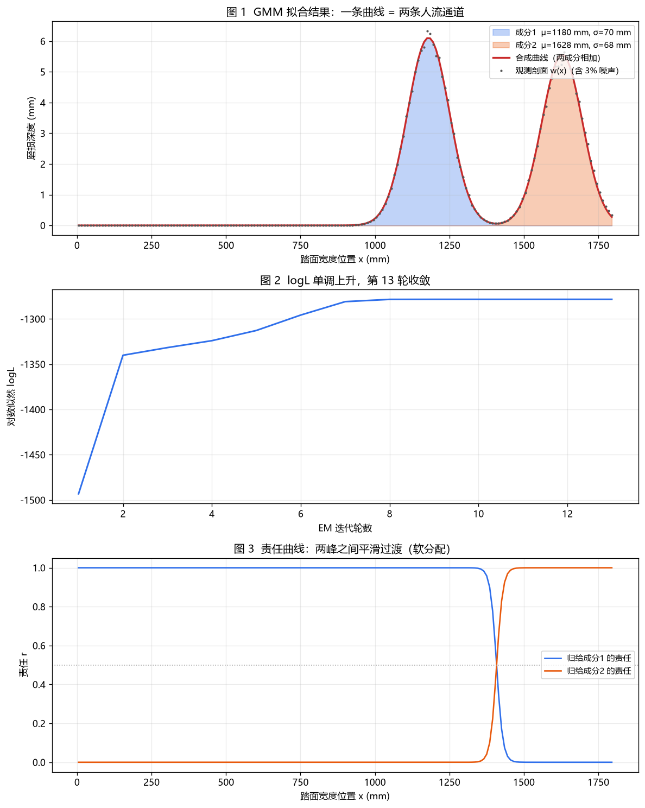

数学建模的代码环境只装一次，之后每道题都用同一个解释器。我现在用的是项目内虚拟环境，好处是换电脑拷过去就能跑，也不会污染系统 Python。
| 项 | 值 |
|---|---|
| 解释器 | C:\Users\Lenovo\Desktop\Python作业\数模练习\.venv\Scripts\python.exe |
| Python | 3.12.10 |
| 关键库 | numpy 2.5.4 · scipy 1.18.1 · matplotlib 3.11.2 · pandas 3.1.0 · pulp 3.3.2 |
| 装法 | py -m venv .venv 然后 pip install -i https://pypi.tuna.tsinghua.edu.cn/simple numpy scipy matplotlib pandas "pulp<4" |
pulp 4.x 是重写版，LpVariable(..., lowBound=0) 会直接 TypeError，必须钉 pulp<4（3.3.x 才有经典 API）。run.bat 里不要写中文注释——cmd 按 OEM 码页读批处理，UTF-8 的中文会把命令行拆坏，报 '参数里的脚本' 不是内部或外部命令。批处理一律用纯 ASCII。
跑法（三行以内）：
cd C:\Users\Lenovo\Desktop\数学建模\code\numpy_basics
C:\Users\Lenovo\Desktop\Python作业\数模练习\.venv\Scripts\python.exe run_all.pynumpy 有几百个函数，数模真正用得上的只有这一小撮。下面八张表就是全部，不用再翻别的。
| 写法 | 得到 |
|---|---|
np.array([1,2,3]) | 从列表造（最常用） |
np.arange(1,21) | 1~20，左闭右开 |
np.linspace(0,1,5) | 0~1 等间距 5 个，含两端 |
np.zeros(3) / np.ones(3) | 全 0 / 全 1 |
| 写法 | 含义 |
|---|---|
a[0]、a[-1] | 第一个、最后一个 |
a[2:7] | 下标 2~6（左闭右开） |
a[:5]、a[::5] | 前 5 个；每 5 个取一个 |
a[a > 15] | 布尔索引——列表做不到，这是 numpy 的招牌 |
x = np.arange(1, 6)
x ** 2 # [ 1 4 9 16 25]
np.sqrt(x) # 每个元素开方
1 / x # 每个元素取倒数
x.sum(); x.mean(); x.max()x[x > 3] # 取出大于 3 的
(x > 3).sum() # True 的个数
np.where(x < 50, 0, x) # 小于 50 的置 0a.reshape(4, 5) # 4 行 5 列
a.reshape(4, 5)[1] # 第二行rng = np.random.default_rng(42) # 42 是种子，同种子结果可复现
rng.normal(0, 1, 5) # 正态
rng.uniform(0, 1, 5) # 均匀
rng.lognormal(mean=np.log(2e-6), sigma=0.3, size=5) # 对数正态np.median(x); np.percentile(x, 90); np.std(x, ddof=1)
counts, edges = np.histogram(x, bins=10)lognormal(mean=2e-6) 的中位数 ≈ 1，不是 2e-6。要中位数是 2e-6，得写 mean=np.log(2e-6)。讲义二 §5.3.1 说它会把 K 放大 500 倍，就是这个。
d = a[:3] 之后改 d[0]，a 也变了。要独立就 a[:3].copy()。
问题：给一座老楼梯，判断建造年代、使用频率、通行模式、与史料是否一致、石材来源。
V = N · v₀ = (T · 365 · q̄) · (K·F·s / H)磨损体积 V 能测，但 T（用多少年）、q̄（每天多少人踩）、K（磨损系数）三个都不知道。不可辨识——这是这道题的真正难点，也是它的价值所在：好答案不是“算出 1874 年”，而是“给出区间并说明哪些结论我不敢下”。
| 主线 | 做法 | 结果 |
|---|---|---|
| ① 标定 K | 找一处已知年代的对照点（同期同材质的构件），反解 K | 把“猜参数”变成“标定参数” |
| ② 压 T | 形制断代（石材加工痕迹、灰浆、栏板样式）给出先验区间 | T ∈ [1750, 1900] |
| ③ 诚实合成 | 蒙特卡洛 + 贝叶斯，把三个区间合成一个 | T ∈ [1836, 1903]，中位 1871 |
| 口径 | 区间 | 宽度 | 用法 |
|---|---|---|---|
| 只用磨损反演 | [1526, 1989] | 463 年 | 说明“单靠磨损什么都定不了” |
| 只用形制断代 | [1750, 1900] | 150 年 | 先验 |
| 两者合成 | [1836, 1903] | 67 年 | 最终结论（中位 1871） |
| 函数 | 干什么 | 验收数字 |
|---|---|---|
ellipse_volume | 每级踏面凹陷体积 π·a·b·w | V = 50 894 mm³ |
impacts_from_volume | V 除以单次磨损 v₀ | N = 6.059×10⁶ 次 |
mc_use_years | 蒙特卡洛抽 T、q̄、K | 中位 134 年，90% [36, 499] |
bayes_dating | 与形制先验合成 | [1836, 1903]，中位 1871 |
gmm_em | 踏面磨损剖面双峰（判断单双人） | 峰位 1.18 / 1.63 m |
dp_segment | 分段找“人流变化点” | 5 段，6–10 段跳变最大 |
05_two_ways.py 为了练手用了更简单的几何（V ≈ 300 697）。两套数字各自自洽，但不是同一个算例，对答案时看清楚用的是哪一套。
lognormal(mean=K) 不是“中位数 K”，是“对数均值 K”（放大 500 倍）。np.std 默认除 n，ddof=1 才除 n−1。// 与 / 结果不同，量纲会因此差 1000 倍。rng.default_rng(seed) 的种子，结果每次都不一样，没法复现。| 报错 | 通常原因 | 怎么改 |
|---|---|---|
NameError: name 'np' is not defined | 忘了 import numpy as np | 文件开头加一行 |
NameError: name 'numpy' is not defined | 写了 as np 却又用 numpy. | 统一用 np. |
TypeError: array() takes ... | np.array(1, 2, 3) | 写成 np.array([1,2,3]) |
IndexError | 下标越界（忘了左闭右开） | 检查 len(a) 与切片终点 |
ValueError: shapes not aligned | 矩阵乘/广播形状不匹配 | print(a.shape, b.shape) |
ZeroDivisionError | 分母里有 0（常见于归一化） | 加 max(x, 1e-12) |
ModuleNotFoundError | 用了系统 python，不是 .venv | 换 .venv\Scripts\python.exe |
TypeError: LpVariable got unexpected 'lowBound' | pulp 4.x | pip install "pulp<4" |
五课、25 题，在 code/numpy_basics/：00 热身（看）→ 01 数组 → 02 向量化 → 03 随机 → 04 统计 → 05 同式两写。每天 40 分钟，三天走完。
| 天 | 读 | 写 | 验收 |
|---|---|---|---|
| 1 | §2 函数总表 | 骨架 + 常量 | 能跑不报错 |
| 2 | §5.1 §5.2 | ellipse_volume | V = 50 894 |
| 3 | §5.3 | mc_use_years | 中位 134、[36,499] |
| 4 | §5.4 §5.5 | 反演 q̄、敏感性 | 110.7 / 55.3 / 31.9 |
| 5 | §5.6 §5.7 | GMM、DP | 1.18/1.63；5 段 |
| 6 | §5.8 §5.9 | Jaccard/τ/BF/材料 | 0.208 / −0.195 / 56.96 |
| 7 | 关上讲义 | 重写 v₀/N/T | 数字仍对 + 能预测参数影响 |
ellipse_volume → V = 50 894这些都是我自己卡住过的地方，记下来省得再翻聊天记录。
import numpy as np 是什么句式一句话 + 一个别名：把 numpy 这个工具箱搬进来，并给它起个短名字 np。名字在 import 那一刻就定下了，后面必须用这个短名。
| 写法 | 后面怎么用 | 什么时候用 |
|---|---|---|
import numpy | numpy.array(...) 写全称 | 几乎不用 |
import numpy as np | np.array(...) | 默认写法，全世界都这么写 |
from numpy import array | array(...) 直接用 | 只要一两个函数时 |
NameError: name 'numpy' is not defined —— 写了 as np 却还在用 numpy.；NameError: name 'np' is not defined —— 忘了写 import 那一行。import math as m、import matplotlib.pyplot as plt 全是同一个句式。别名只是自己起的外号，Python 不检查起得好不好。
np.array([1,2,3]) 是什么，为什么“只能输入整体”拆成三块看：np 是工具箱，array 是工具箱里的函数，([1,2,3]) 是调用它并传参。参数只有一个——整个列表，不是三个数。
np.array([1, 2, 3]) # ✔ 一个列表 → 一个数组
np.array(1, 2, 3) # ✘ TypeError: array() takes from 1 to 2 positional arguments but 4 were given
np.array([[1,2],[3,4]]) # ✔ 列表套列表 → 二维数组np.zeros(3) 的 3 是“要几个”，np.array([1,2,3]) 的列表是“数据本身”。写之前先想清楚：这个参数是形状还是数据。列表和数组的区别（这才是要转成数组的原因）：
| 操作 | 列表 [1,2,3] | 数组 np.array([1,2,3]) |
|---|---|---|
* 2 | 复制一份：[1,2,3,1,2,3] | 逐元素：[2 4 6] |
+ 1 | 报错 TypeError | 逐元素：[2 3 4] |
.shape / .dtype | 没有 | 有：(3,) / int64 |
| 20 个元素逐个乘系数 | 要写 for | 一行 w * 0.8 |
rng = np.random.default_rng(42) 里的 42 是什么default_rng(42) 造出一台随机数生成器（一个对象），42 是种子：同一个种子 ⇒ 同一串随机数，结果可复现。之后调它身上的方法：rng.normal(...)、rng.uniform(...)、rng.lognormal(...)。
np.random.seed(42) + np.random.normal() 还能跑，但新代码统一用 default_rng。line = lambda s="": ... 这一长串四样东西叠在一起，拆开就是普通话：
line = lambda s="": print("─" * 56) or print(s)lambda：匿名函数，等价于 def line(s=""):s=""：默认参数，不传就用空串"─" * 56：字符串重复 56 次，画一条分隔线A or B：短路求值；print 返回 None（假值）⇒ 总会接着执行 B正式代码里更该这么写，一眼能看懂：
def line(s=""):
print("─" * 56)
if s:
print(s)这一节回答的全是「这个词到底指什么」——不是语法，是概念。
shape：每一维有几个元素shape 是个元组，从外到内，每个数字说这一维有几个元素。
| shape | 含义 | 通俗说法 |
|---|---|---|
(20,) | 1 个维度 × 20 | 一维，20 个数排成一列 |
(3, 4) | 3 × 4 | 二维，3 行 4 列（一张表） |
(2, 3, 4) | 2 × 3 × 4 | 三维，2 张 3 行 4 列的表 |
np.array(...) 的维度就是方括号嵌套的层数：一层一维，两层两维。
np.array([1, 2, 3]) .shape # → (3,) 1 层括号 = 一维
np.array([[1, 2, 3], [4, 5, 6]]) .shape # → (2, 3) 2 层 = 2 行 3 列
np.array([[[1, 2], [3, 4]]]) .shape # → (1, 2, 2) 3 层 = 三维注意 [[1, 2, 3]] 只比 [1, 2, 3] 多一层括号，但它是 (1, 3)——1 行 3 列，不是一维。写 np.array([[1, 2, 3], 换行 [4, 5, 6]]) 时，每个内层方括号就是一行。
np.array([[1, 2], [3]]) 会直接报错：ValueError: setting an array element with a sequence. The requested array has an inhomogeneous shape after 1 dimensions. The detected shape was (2,) + inhomogeneous part.dtype=object 的"数组里装着列表"，之后所有运算都慢且不可预期——看到 dtype=object 就说明数据没对齐。(20,) 里那个逗号不是笔误：Python 里 (20) 是整数 20，(20,) 才是「只有一个元素的元组」。shape 永远是元组，所以一维数组显示成 (20,)——看到末尾逗号就知道它是一维。三个容易混的属性：
| 属性 | 含义 | (3,4) 时 |
|---|---|---|
shape | 每一维各几个 | (3, 4) |
size | 总共有几个（各维相乘） | 12 |
len(a) | 只看第一维 | 3（行数） |
为什么要盯着 shape：所有「整体运算」都按形状走——reshape 要求元素总数不变，两个数组相加要求形状对得上，矩阵乘按形状校验。报错里出现 shapes 就先 print(a.shape, b.shape)。
(20,) 和 (20, 1) 不是一回事：前者是一维序列，后者是 20 行 1 列的矩阵。数学上都是 20 个数，但广播和矩阵乘的行为不同——这是建模代码里最容易翻车的地方。
x = np.arange(1, 21) # 一维
y = x.reshape(-1, 1) # 20 行 1 列
x.shape # → (20,) ← 一个数：一维
y.shape # → (20, 1) ← 两个数：二维
x.size # → 20
y.size # → 20 ← size 一样
len(x) # → 20
len(y) # → 20 ← len 只看第一维，也一样（所以别用 len 判断维度）
x.ndim # → 1
y.ndim # → 2 ← ndim 才看得出区别
print(x[:3]) # → [1 2 3]
print(y[:3]) # → [[1]
# [2]
# [3]]
(x - y).shape # → (20, 20) ← 广播出一个 20×20 的矩阵
x[:, None].shape # → (20, 1) 一维升二维
y.ravel().shape # → (20,) 二维压回一维reshape：重新摆一下形状，不加也不减把同一批数字按新形状重新排列。元素总数必须相等，否则报错。
a = np.arange(1, 7) # [1 2 3 4 5 6] shape (6,)
a.reshape(2, 3) # [[1 2 3]
# [4 5 6]]
a.reshape(3, 2) # [[1 2]
# [3 4]
# [5 6]]
a.reshape(-1, 3) # 行数写 -1，让它自己算 → 还是 [[1 2 3],[4 5 6]]
a.reshape(4, 2) # ✘ ValueError: cannot reshape array of size 6 into shape (4,2)要点三条：
-1 表示「这一维你自己算」，只能出现一次；reshape 返回的是视图，不是复制——改新数组会改原数组：b = a.reshape(2, 3)
b[0, 0] = 99
print(a) # → [99 2 3 4 5 6] 原数组也变了！
a.reshape(2,3).copy() # 要独立副本就加 .copy()b = a.reshape(2, 3) 之后，b 是 2 行 3 列，但 a 自己一点没变——形状还是 (6,)，print(a) 仍然是一行 6 个数（只是数据被改了）。reshape 返回一个新对象（新形状，指向同一块内存）：改 b[0,0] 改的是数据 ⇒ a 的数据跟着变（np.shares_memory(a, b) 为 True），但 a 的形状不会变。a 自己也变成 2 行 3 列，必须重新赋值：a = a.reshape(2, 3)。linspace 和 arange 的分工np.linspace(0, 1, 5) | np.arange(0, 1, 0.25) | |
|---|---|---|
| 你告诉它 | 要几个（5 个） | 步长多少（0.25） |
| 含终点吗 | 含：[0. 0.25 0.5 0.75 1.] | 不含：[0. 0.25 0.5 0.75] |
| 适合 | 画图横轴、算分位点的网格 | 整数序列 1..20 |
| 坑 | 个数写错就整批错 | 浮点累加有误差，最后一个数可能不是精确值 |
所以：要等间距的浮点数，优先 linspace。
np.zeros(3) 和 np.array([3]) 不是一回事np.zeros(3) # → [0. 0. 0.] 3 个元素，参数是"要几个"
np.array([3]) # → [3] 1 个元素，值是 3
np.array([3, 4]) # → [3 4] 2 个元素
np.zeros(3, dtype=int) # → [0 0 0] 要整数得显式指定记法一句话：zeros/ones/arange 的参数是「形状」，array 的参数是「数据本身」。
ValueError: operands could not be broadcast together with shapes (20,) (3,4)读法：两个数组的维度配不上，numpy 不知道该把谁和谁一一配对。先 print(a.shape, b.shape)，再想清楚你要的是「一行加一行」还是「所有元素加一个常数」。
规则一句话：逗号分隔，每一维给一个切片。一维时你写 a[2:7]，二维就是 a[行, 列]。
a = np.arange(1, 13).reshape(3, 4) # 3 行 4 列
# [[ 1 2 3 4]
# [ 5 6 7 8]
# [ 9 10 11 12]]
a[1] # → [5 6 7 8] 整个第 2 行（返回一维）
a[1, 2] # → 7 第 2 行第 3 列，单个数
a[:, 1] # → [ 2 6 10] 第 2 列（降成一维）
a[:, 1:2] # → 形状 (3, 1) 还是二维，保住"列"
a[0:2, 1:3] # → [[2 3],[6 7]] 行取 0~1、列取 1~2
a[::2, ::2] # → [[1 3],[9 11]] 行每 2 个取一个、列每 2 个取一个
a[-1] # → [ 9 10 11 12] 最后一行a[:, 1] 会降维成一维 (3,)；要保住二维就用 a[:, 1:2]（形状 (3,1)）——写矩阵运算时这一步很要紧。a[1] 是「整个第 2 行」，不是「第 2 个数」；取单个数是 a[1, 2]。s = a[0:2, 0:2] 改 s[0,0] 会改到 a；但布尔索引 a[a > 8] 是复制，改它不影响原数组，而且结果被压成一维。
a[:, 1:2] 是 (3, 1) 而不是 (3,)？规则：哪一维用整数下标，哪一维就被「吃掉」；用切片（或列表），哪一维就保留——哪怕只取到一个元素，它仍是长度 1 的一个维度。
a.shape # → (3, 4)
a[:, 1] .shape # → (3,) 整数 1 把"列"这一维吃掉
a[:, 1:2] .shape # → (3, 1) 切片 1:2 保留"列"这一维，长度 1
a[:, [1]] .shape # → (3, 1) 列表同理
a[:, 1][:, None] # → (3, 1) 先降成一维，再用 None 手动加一层
a[1] .shape # → (4,) 整数吃掉"行"
a[1:2] .shape # → (1, 4) 切片保留"行"
a[1, 2] # → 7 全是整数 → 0 维标量一句话：整数 = 按键取值，维度被消耗；切片 = 按范围取，维度被保留。
逗号什么时候写？只有跨维度时才写——逗号左边管第 1 维、右边管第 2 维；没写的维度默认全取。所以二维的 a[1:2] 与 a[1:2, :] 完全等价（都是"第 2 行、所有列"）。末尾再补一个逗号 a[1:2,] 也合法（Python 把它当成只含一项的元组），结果一样，但容易让人误以为后面还有一维，不建议写。
a[1:2] # → [[5 6 7 8]] shape (1, 4) 只写一个切片：行；列默认全取
a[1:2, :] # → [[5 6 7 8]] shape (1, 4) 显式写出列全取，等价
a[1:2,] # → [[5 6 7 8]] shape (1, 4) 末尾逗号，也等价，但别写
a[1:2, 2] # → [7] shape (1,) 行切片 + 列整数 → 列这一维没了三维就是三个切片 c[i, j, k]；某一维全取用 : 或省略号 ...，例如 c[:, 0, :]。
np.mean 就是算术平均：所有数相加除以个数。它和 np.median（中位数）常被混着说，但两者对"极端值"的反应完全不同。
a = np.array([1, 2, 3, 4, 10])
a.mean() # → 4.0 (1+2+3+4+10)/5
a.sum()/len(a) # → 4.0 手写版，同一个数
np.median(a) # → 3.0 排序后取中间那个，不被 10 拖走一个 10 就能把均值从 3 拉到 4，中位数还是 3。所以：要"典型值"用 median，要"总量平摊"用 mean。
m = np.array([[1, 2, 3],
[4, 5, 6]])
m.mean() # → 3.5 全部 6 个数
m.mean(axis=0) # → [2.5 3.5 4.5] 按列压 → 每列一个平均
m.mean(axis=1) # → [2. 5. ] 按行压 → 每行一个平均记法：axis=k 表示把第 k 维压掉——axis=0 压掉行 ⇒ 结果长度 = 列数。
np.averagev = np.array([10., 20., 30.])
w = np.array([0.5, 0.3, 0.2])
np.average(v, weights=w) # → 17.0 10×0.5 + 20×0.3 + 30×0.2
v.mean() # → 20.0 等权，不是一回事建模里"按台阶长度加权""按持续时间加权"都用它——算平均磨损深度时就是按各测点覆盖的台阶长度加权。
b = np.array([1, 2, 3, 4])
b.std() # → 1.1180 默认 ddof=0，除以 n（总体标准差）
b.std(ddof=1) # → 1.2910 除以 n−1（样本标准差，与 Excel / pandas 一致）numpy 默认 ddof=0，pandas 默认 ddof=1——同一个数组两边算出的标准差不同，不是 bug。
c = np.array([1, 2, np.nan, 4])
c.mean() # → nan 一个 nan 传染全部
np.nanmean(c) # → 2.3333 跳过 nan 再求平均std = 标准差（standard deviation）：衡量「数据离平均值有多散」，单位与数据本身相同。它就是方差的平方根。
b = np.array([1., 2., 3., 4.])
b.mean() # → 2.5
b - b.mean() # → [-1.5 -0.5 0.5 1.5] 每个数与平均值的偏差
(b - b.mean())**2 # → [2.25 0.25 0.25 2.25] 平方（正负抵消不了）
((b-b.mean())**2).sum() # → 5.0
方差 = 5.0 / 4 = 1.25 → 标准差 = √1.25 = 1.1180 = b.std()
方差 = 5.0 / 3 = 1.6667 → 标准差 = √1.6667 = 1.2910 = b.std(ddof=1)ddof 就是「分母减掉多少」：方差 = Σ(x−x̄)² / (n − ddof)。
ddof=0：除以 n。描述手上这批数本身有多散（总体标准差）。numpy 默认。ddof=1：除以 n−1。用样本估计总体时的无偏估计（Bessel 校正）。pandas / Excel 默认。同一个数组，两种算法差 √(n/(n−1)) 倍——n 小的时候差得明显（n=4 时差 15%）。实验测的数据一般用 ddof=1。
nan = Not a Number：浮点数里的「无效 / 缺失」标记。它不是异常，而是 IEEE 754 规定的一种值，会静默传播。
nan = float("nan")
np.float64(0) / np.float64(0) # → nan （0 除 0）
np.sqrt(np.float64(-1.0)) # → nan （负数开方，只给警告）
float("inf") - float("inf") # → nan （无穷减无穷）
np.array([1, np.nan]).mean() # → nan （缺失值参与平均）
nan == nan # → False ← 反直觉：它不等于自己
nan != nan # → True
np.isnan(nan) # → True ← 唯一可靠的判断方式
nan + 1 # → nan ← 传染：任何运算结果还是 nan
np.nanmean([1, 2, np.nan, 4]) # → 2.3333 跳过 nan 求平均
np.nansum([1, 2, np.nan, 4]) # → 7.0
np.nanstd([1, 2, np.nan, 4]) # → 1.2472 （ddof=0）np.isnan(x)，写 x == np.nan 永远为 False；② nan 会传染，一步不查，最后结果全是 nan；③ 结果莫名变成 nan 时，先 print(np.isnan(a).sum()) 数一下有几个，再回头看数据从哪来。mask = x > 3 不是「如果 x 大于 3 就怎样」的分支判断，而是把比较一次性施加到每个元素上，返回一个和 x 等长的布尔数组（dtype=bool）。每个位置只回答一个问题：这个元素满足条件吗？
x = np.array([1, 4, 2, 7, 5])
mask = x > 3
mask # → [False True False True True] dtype bool shape (5,)
type(mask) # → numpy.ndarray名字叫 mask（掩码）是"遮罩"的意思：True 的位置透光（留下），False 的位置被挡住（丢掉）。
| 写法 | 结果 |
|---|---|
x[mask] | [4 7 5] —— 只留下 True 的位置 |
mask.sum() | 3 —— True 的个数（True 当 1） |
~mask | [ True False True False False] —— 取反 |
y[mask] = 0 | 满足条件的元素被改成 0 |
mask & m2 / mask | m2 | 「且」/「或」（逐元素） |
它把"筛选"这件事从原来的 for 循环 + if + append 三行，压成一行 x[x > 3]——这就是 numpy 最值钱的写法。
and / or，会报 ValueError: The truth value of an array with more than one element is ambiguous. Use a.any() or a.all()；必须用 & |，并且每个比较都加括号：(x > 3) & (x < 7)。x[mask] 选出的是复制，改它不会改 x；要改原件得写成赋值形式 x[mask] = 0。mask 必须和 x 形状一致，否则报 IndexError: boolean index did not match indexed array。
逐字拆开看：
| 片段 | 是什么 | 作用 |
|---|---|---|
np | numpy 的别名 | 指向 numpy 这个包 |
.random | numpy 下的子模块 | 所有随机数相关的函数都住在这里 |
default_rng | 函数名（default random number generator） | 造一个随机数发生器对象并返回它 |
(42) | 传给它的参数：种子 seed | 决定发生器从哪个"起点"开始 |
= | 赋值 | 把造出来的对象绑到名字 rng 上，后面都用它 |
rng # → Generator(PCG64) ← 底层算法是 PCG64
rng.bit_generator # → <numpy.random._pcg64.PCG64 object>
rng.bit_generator.state # → {'bit_generator':'PCG64', 'state':{'state':…, 'inc':…}, …}所以它不是"固定一个数"，而是"固定一条随机流"：种子喂进去，算法把它展开成内部状态（PCG64 是 128 位），此后每调用一次 rng.random() 就推进状态并吐出一个数。同种子 ⇒ 同起点 ⇒ 同一条序列，不是查表，也不存在"随机数库"。
default_rng() 结果不同），结果无法复现。这一行做了两件事：造一个随机数发生器对象，并给它一个种子（seed）。之后所有随机抽样都从这个对象上取。
rng = np.random.default_rng(42)
type(rng) # → numpy.random.Generator （不是函数的返回值，是一个对象）
rng.random(3) # → [0.77395605 0.43887844 0.85859792] [0,1) 均匀小数
rng.random(3) # → [0.69736803 0.09417735 0.97562235] ← 继续取，值变了
np.random.default_rng(42).random(3) # → [0.77395605 0.43887844 0.85859792]
np.random.default_rng(7).random(3) # → [0.62509547 0.8972138 0.77568569]旧写法 np.random.seed(42) 是给全局随机数发生器设种子，项目里任何地方调用 np.random.rand() 都受影响，两段代码互相干扰。新的 default_rng() 每次返回独立的发生器，各用各的，互不影响——这在大项目里是刚需。
先说清楚"一次调用抽几个"：最后那个参数 size 就是个数——写 3 抽 3 个，写 (2,3) 抽 6 个并排成 2×3；不给 size 就抽 1 个（返回标量，不是数组）。不管抽几个，返回值永远是 ndarray。
rng = np.random.default_rng(0)
rng.random(3) # → [0.63696169 0.26978671 0.04097352] float，[0,1)
rng.random((2, 3)) # → [[0.0165 0.8133 0.9128]
# [0.6066 0.7295 0.5436]] 2 行 3 列
rng.uniform(60, 420, 3) # → [396.63 353.71 60.99] float，落在 [60,420]
rng.normal(0, 1, 3) # → [-2.325 -0.2188 -1.2459] 可负，钟形
rng.normal(170, 8, 3) # → [164.14 165.65 167.47] 身高：均值 170、标准差 8
rng.integers(1, 7, 5) # → [1 2 3 3 3] 整数，1~6（7 取不到）
rng.integers(1, 6, 5, endpoint=True) # → [1 1 1 1 5] 含 6
a = np.array(["甲", "乙", "丙", "丁"])
rng.choice(a, 2, replace=False) # → ['丙' '乙'] 不重复
rng.choice(a, 6) # → ['丙' '丁' '乙' '乙' '丁' '丁'] 有放回，会重复
rng.permutation(10) # → [1 2 5 8 0 4 7 9 3 6] 0~9 打乱
rng.permutation(a) # → ['甲' '丁' '乙' '丙'] 打乱元素本身| 方法 | 参数 | 返回 | 建模里用来抽什么 |
|---|---|---|---|
random(size) | 个数 | float，[0,1) | 概率、权重、0~1 的随机系数 |
uniform(low, high, size) | 下界、上界、个数 | float，区间内等概率 | 只知道范围、不知道形状的参数（如使用年数 T~U(60,420)） |
normal(mean, sd, size) | 均值、标准差、个数 | float，钟形 | 测量误差、读数抖动 |
integers(low, high, size) | 下界、上界（不含）、个数 | int | 计数、编号、掷骰子 |
choice(a, size, replace) | 候选数组、个数、是否有放回 | a 里的元素 | 抽样调查、划分训练/验证集 |
permutation(n 或 a) | 整数或数组 | 打乱后的副本 | 打乱顺序、bootstrap 重抽样 |
因为 random() 的契约就是标准均匀分布：半开区间 [0,1)，类型 float64，永远取不到 1。它不是"随机数"的泛称，而是"标准均匀随机数"——所有其他区间的均匀分布都由它线性变换得到。
x = np.random.default_rng(1).random(100_000)
x.min() # → 1e-06
x.max() # → 0.999991
(x >= 1).sum() # → 0 ← 10 万个样本，一个到 1 的都没有
x.dtype # → float64为什么定在 [0,1) 而不是"任意范围"：因为 uniform(a, b, n) 就是 a + (b-a)*random(n)，没必要为每个区间单独造函数。
a, b = 60, 420
man = a + (b - a) * np.random.default_rng(2).random(3) # → [154.18 167.46 353.12]
uni = np.random.default_rng(2).uniform(a, b, 3) # → [154.18 167.46 353.12]
np.allclose(man, uni) # → True ← 完全一样参数 3 是"形状"，不是"范围"：
rng.random(3) # → [0.637 0.270 0.041] 形状 (3,) 三个数
rng.random((2, 3)) # → 2 行 3 列 形状 (2, 3) 六个数
rng.random() # → 0.6369 标量
rng.random() * 3 # → 1.9 ← 一个数，放大到 [0,3)rng.random(3) 是"抽 3 个数"，rng.random()*3 是"抽 1 个数再乘 3"。3 在括号里是形状，在括号外是倍数。| 想要什么 | 写法 | 实测输出 |
|---|---|---|
| 任意实数区间 | rng.uniform(a, b, n) | uniform(60,420,3) → [396.63 353.71 60.99] |
| 整数 | rng.integers(1, 7, 5) | [1 2 3 3 3]（上界取不到） |
| 正态 | rng.normal(170, 8, 3) | [164.14 165.65 167.47] |
| 按概率取 0/1 | rng.random(n) < 0.3 | 布尔数组，True 占约 30% |
big = rng.uniform(60, 420, 200_000)
big.mean() # → 239.74 （理论值 (60+420)/2 = 240，差 0.26）
big.min() # → 60.0
big.max() # → 420.0
d = rng.integers(1, 7, 600_000)
(d == 1).mean() # → 0.1666 六面各约 1/6 ≈ 0.1667
(d == 6).mean() # → 0.1674uniform(60, 420) 写成了 normal(60, 420)）。| 写法 | 含义 |
|---|---|
rng.random(3) | [0,1) 均匀小数 |
rng.uniform(60, 420, 3) | 区间 [60,420] 上的均匀分布 |
rng.normal(0, 1, 3) | 正态分布（均值 0、标准差 1） |
rng.integers(1, 7, 5) | 整数 [1,7)，即掷骰子 |
rng.choice(a, size, replace=False) | 从数组里抽（可设为不重复） |
rng.permutation(10) | 打乱 0~9 的顺序 |
| 旧写法（全局） | 新写法（对象） |
|---|---|
np.random.seed(42) | rng = np.random.default_rng(42) |
np.random.rand(3) | rng.random(3) |
np.random.normal(0,1,3) | rng.normal(0, 1, 3) |
np.random.randint(1,7,5) | rng.integers(1, 7, 5) |
random(3) 得到的两组数不一样（见上面输出）；要每次重来，就重新 default_rng(42)。
看到 np.exp(...) 就读成 “e 的…次方”。它不是新运算，就是指数函数。
np.exp(0) # → 1.0
np.exp(1) # → 2.718281828459045 ← 这就是 e
np.exp(-1) # → 0.36787944117144233
np.exp(2) # → 7.38905609893065 ← e × e
np.exp(np.array([0, 1, 2])) # → [1. 2.71828183 7.3890561 ] 逐元素
(1 + 1/n) ** n
n=1 # → 2.0000000000
n=10 # → 2.5937424601
n=100 # → 2.7048138294
n=1000 # → 2.7169239322
n=100000 # → 2.7182682372
n=100000000 # → 2.7182817983 ← 越来越靠近 e = 2.718281828…
极限章里的 lim(1+1/n)^n = e 就是它。e 的特殊之处只有一个：它的导数等于自己，(ex)′ = ex。
| 性质 | 代码 | 结果 |
|---|---|---|
| e0 = 1 | np.exp(0) | 1.0 |
| ea+b = ea·eb | np.exp(3) == np.exp(1)*np.exp(2) | True |
| e−x = 1/ex | np.exp(-1) | 0.36787944… |
| ln(ex) = x | np.log(np.exp(3)) | 3.0 |
| eln x = x | np.exp(np.log(2)) | 2.0 |
| 永远为正，x→−∞ 时趋近 0 | np.exp(-50) | 1.9e-22 |
最后一条的意思是：它永远大于 0，也永远碰不到 0。所以 exp 常用来把“可正可负的数”变成“正数”（比如概率、强度）。
x = np.array([0.5, 1.5, 2.5])
np.exp(x) # → [ 1.64872127 4.48168907 12.18249396]
np.e**x # → [ 1.64872127 4.48168907 12.18249396]
np.allclose(np.exp(x), np.e**x) # → True
数学上一样，工程上 exp 更好：专函数实现、边界处理更稳、还支持复数。所以约定俗成写 np.exp，np.e**x 只在手算演示时出现。
np.exp(1000) # → inf 并警告 RuntimeWarning: overflow encountered in exp
np.exp(-1000) # → 0.0 下溢：数学上是正数，只是小到存不下
np.log + sum），需要还原概率时再 np.exp；如果还要归一化，就用 logsumexp（后面的课再讲，现在知道有这么个东西就行）。前面那条 X = np.exp(Z) 就是它：正态抽出来的 Z 可正可负，取 exp 之后全变成正数、而且右偏 —— 这正是 lognormal 的来历。
rng = np.random.default_rng(42)
Z = rng.normal(0, 0.5, 5) # → [ 0.15235854 -0.51999205 0.3752256 0.47028236 -0.97551759]
X = np.exp(Z) # → [1.16457771 0.59452527 1.45531969 1.60044603 0.37699717]
np.log(X) # → [ 0.15235854 -0.51999205 0.3752256 0.47028236 -0.97551759] 回到 Z
所以 lognormal(mean, sigma) 内部干的事，就是“抽正态 → 取 exp”两步。
一句话：用正态描述 x 的对数，再用 exp 生成非负、右偏的 x。要的是 x，ln x 只是工具。
| # | z0（标准正态） | z = 0.5z0（= ln x） | x = ez |
|---|---|---|---|
| 0 | 0.304717079754 | 0.152358539877 | 1.164577709136 |
| 1 | −1.039984106240 | −0.519992053120 | 0.594525272572 |
| 2 | 0.750451195806 | 0.375225597903 | 1.455319694659 |
| 3 | 0.940564716391 | 0.470282358196 | 1.600446028477 |
| 4 | −1.951035188654 | −0.975517594327 | 0.376997171458 |
第 0 行手算：$0.304717 \times 0.5 = 0.152359$，$e^{0.152359} = 1.164578$。反过来 $\ln(1.1645777) = 0.1523585$。
rng = np.random.default_rng(42) # 定状态：这一步决定了下面所有数
z0 = rng.normal(0, 1, 5) # → [ 0.30471708 -1.03998411 0.7504512 0.94056472 -1.95103519]
z = 0.0 + 0.5 * z0 # → [ 0.15235854 -0.51999205 0.3752256 0.47028236 -0.97551759] ← 这个 z 就是 ln x
x = np.exp(z) # → [1.16457771 0.59452527 1.45531969 1.60044603 0.37699717] ← 最终样本
np.log(x) # → [ 0.15235854 -0.51999205 0.3752256 0.47028236 -0.97551759] ← 回到 z
rng.lognormal(0, 0.5, 5) 返回的正是上面第 4 行那个 x。exp(loc + scale * z0) 一行——所以 lognormal(...) 与 np.exp(normal(...)) 逐位相同（ULP 差全为 0）。| 问题 | 答案 |
|---|---|
| 为什么先抽正态？ | 定义只说“ln x 是正态”，要造它，只能从正态这个入口进。 |
| 为什么乘 σ？ | z0 的标准差是 1，要 ln x 的标准差是 σ，就乘 σ（sd(σz0) = σ）。 |
| 为什么最后要 exp？ | 因为 z = ln x，所以 x = ez。这一步还顺手把数值变成全正。 |
参数位置提醒：lognormal(mean, sigma) 的 mean 和 sigma 都是对数尺度上的（即 ln x 的均值和标准差），不是 x 的。
| z | −2 | −1 | 0 | +1 | +2 |
|---|---|---|---|---|---|
| ez | 0.135 | 0.368 | 1 | 2.718 | 7.389 |
负方向被压向 0（−2 与 −1 只差 0.23），正方向被拉开（+1 与 +2 差 4.67）。对称的 z 变出不对称的 x，长尾在右边。
# 要 x（原尺度，mm / 元 / 年）
x = rng.lognormal(mu, sigma, n) # 一步到位
x = np.exp(mu + sigma * rng.normal(0, 1, n)) # 拆开写，等于上面
# 要 ln x（对数尺度，做统计用）
z = rng.normal(mu, sigma, n) # 不加 exp，直接就是 ln x
z = np.log(已有数据) # 已有数据也可以取对数
lognormal / exp；normal(mu, sigma)。exp，不是来自“取对数”。取对数反而把正数映射到可正可负。| 情况 | 怎么办 |
|---|---|
| 数据里有 0 | ln 0 = −∞，直接崩；改 Gamma / Tweedie 或“零膨胀”模型 |
| 数据里有负数 | 根本不能取对数，用正态或对称分布 |
| 数据其实对称 | 硬套 lognormal 会人为造出右偏 |
撞上它是在 00_warmup 的「10. 统计」那段：print("mean =", round(data.mean(), 2))。三个坑记在这里。
round(3.14159) # → 3 不给 n 就取整，返回 int
round(3.14159, 2) # → 3.14 给 n 保留 n 位，返回 float
round(99.8, 2) # → 99.8 末尾 0 会被抹掉，不是 99.80
np.round(np.array([1.2345, 2.3456, 3.4567]), 2) # → [1.23 2.35 3.46] 数组要逐元素就
正好 .5 时往偶数靠，不往大靠：
round(0.5) # → 0 不是 1
round(1.5) # → 2
round(2.5) # → 2 不是 3
round(3.5) # → 4
round(4.5) # → 4 不是 5
理由：避免大量 .5 全部向上时产生系统性偏大。真要「四舍五入」得用 decimal 模块或自己写。
round(2.675, 2) # → 2.67 不是 2.68
因为 2.675 在二进制浮点里实际存的是 2.67499999…，舍到两位自然往下。不是 bug，是浮点的本性。
round(99.8, 2) # → 99.8 值是 99.8，打印只一位
f"{99.8:.2f}" # → '99.80' 字符串，固定两位，用于显示/写表
| 需求 | 用哪个 | 原因 |
|---|---|---|
| 还要继续算 | round | 仍是数字 |
| 写进论文/表格、位数对齐 | f-string :.2f | 保证两位，不会抹 0 |
| 整个数组一起舍 | np.round | 逐元素，不用写循环 |
data = np.random.default_rng(7).normal(100, 15, 10000) # 均值100、标准差15、1万个
round(data.mean(), 2) # → 99.82 平均
round(np.median(data), 2) # → 99.8 排序后正中间那个
round(np.percentile(data, 90), 2) # → 118.89 第 90% 位置：90% 的数比它小
counts, edges = np.histogram(data, bins=5)
# counts → [ 177 2678 5524 1566 55] 每段几个数（合计 10000）
# edges → [ 45.1 68.3 91.4 114.6 137.8 160.9] 6 个界值 = 5 段，段宽 23.17
看 counts 就知道形状：中间两段装了 8202 个（82%），两头很少 —— 这就是「钟形」的数字证据。
一句话：把数据数到一组相邻箱子里，返回「每箱几个」和「边界在哪」。就是直方图背后的数字。
data = np.random.default_rng(7).normal(100, 15, 10000)
counts, edges = np.histogram(data, bins=5)
counts # → [ 177 2678 5524 1566 55] 长度 5 = bins
edges # → [ 45.0838 68.2518 91.4199 114.588 137.756 160.9241] 长度 6 = bins+1
edges: 45.08 68.25 91.42 114.59 137.76 160.92
└──段0──┘└──段1──┘└──段2──┘└──段3──┘└─段4─┘
counts: 177 2678 5524 1566 55
第 i 个箱子 = [edges[i], edges[i+1])。
data.min() = 45.0838 data.max() = 160.9241
段宽 = (160.9241 - 45.0838) / 5 = 23.1681
箱子贴着数据的最小/最大值，不是从 0 开始、也不是整数边界。要整数边界就把 bins 传成数组。
| 段 | 区间 | 个数 | 占比 | 段内中位 |
|---|---|---|---|---|
| 0 | [45.08, 68.25) | 177 | 1.8% | 64.70 |
| 1 | [68.25, 91.42) | 2678 | 26.8% | 84.39 |
| 2 | [91.42, 114.59) | 5524 | 55.2% | 102.08 |
| 3 | [114.59, 137.76) | 1566 | 15.7% | 120.36 |
| 4 | [137.76, 160.92] | 55 | 0.6% | 140.57 |
用 (data >= lo) & (data < hi) 一段段数，结果与 counts 完全一致。占比那一列就是直方图归一化后的纵轴。
| 函数 | 给你什么 | 用在哪 |
|---|---|---|
np.histogram | 数字（counts + edges） | 写进表、继续算（拟合、找峰） |
plt.hist | 图 | 论文里给读者看 |
np.histogram(data, bins=5) # 均分 5 段（最常用）
np.histogram(data, bins=[0, 68, 91, 100, 115, 200]) # 自己给边界
# → counts [ 169 2598 2281 3402 1550] edges [0 68 91 100 115 200]
np.histogram(data, bins="auto") # 自动定段数（这里 62 段）
np.histogram(data, bins=5, range=(70, 130)) # 只看这个区间 → 合计 9537
np.histogram(data, bins=5, density=True) # 变密度，各段面积合计 1.0
np.histogram(data, bins=5, weights=np.ones(len(data))*0.5) # 加权计数
自定边界的好处是可解释：“低于 68 偏矮 / 68–91 中下 / 91–100 中等……”比 45.08–68.25 这种怪数字好讲。
range=(70,130) 时合计只有 9537（463 个落在外面），不是 10000。ValueError: autodetected range of [nan, nan] is not finite。修法两种：给 range=（NaN 被丢，合计 9990），或先 data[~np.isnan(data)]。np.histogram([0,1,2,3,4], bins=[0,2,4]) → counts [2 3]，即 [0,2) 收 0,1；[2,4] 收 2,3,4。正好在边界上的数落到右边那个箱子。==，要比较就用 np.isclose。
拿到 counts 后看三件事：
| 看什么 | 本例答案 | 说明 |
|---|---|---|
| 哪一段最大 | 91.4–114.6，占 55% | 数据集中在哪里 |
| 两边是否对称 | 左 26.8% vs 右 15.7% | 不对称，右尾略长 |
| 两端有多少 | 1.8% 和 0.6% | 没有明显离群 |
再和 np.percentile(data, 90) = 118.89 对一下：它正好落在第 4 段（114.59–137.76）里，两个工具互相验证。
抽样出来的值会飞出合理范围——体重 700 N 的人不会重到 1500 N。把这条常识写进代码有两种写法，结果不一样。
F = np.clip(rng.normal(700.0, 80.0, 20000), 400.0, 1200.0)越界的值被直接改成边界值。好处是一行、确定、不丢样本；坏处是边界上出现堆积——本该是 250 N 的样本变成 400 N，400 这个点被凭空抬高。
seed=42，抽 20000 个 N(700, 80)：
| 检查项 | 结果 |
|---|---|
| < 400 的个数 | 2 |
| > 1200 的个数 | 0 |
| clip 后正好等于 400 的个数 | 2（就是那 2 个） |
占比 0.01%，对分位数毫无影响。范围定得够宽时 clip 够用，讲义就是这么处理的。
越界的直接丢弃，只在 [lo, hi] 内重新归一化。形状保持，没有边界堆积。numpy 没有现成函数，用 scipy：
from scipy.stats import truncnorm
a = (400.0 - 700.0) / 80.0 # 标准化下界 (lo - loc) / scale
b = (1200.0 - 700.0) / 80.0 # 标准化上界
F = truncnorm(a, b, loc=700.0, scale=80.0).rvs(20000, random_state=42)判断标准：越界比例 < 1% 用 clip，否则换真截断。
σ 不是算出来的，是你对「这个数有多不确定」的量化。三种分布对应三种问法。
F ~ N(700, 80)：68% 的样本落在 620~780，相当于体重上下 8 kg。能说出「大概上下多少」就够。
只给 [lo, hi]，标准差自动是 (hi−lo)/√12。H ~ U(4e9, 6e9) 对应 σ ≈ 5.8e8，约 11.5%。
95% 区间 = 中位数 × e^(±1.96σ)：
| σ | 95% 区间（相对中位数） | 例子 |
|---|---|---|
| 0.4 | 0.46 ~ 2.19 倍 | q：110 → 约 50 ~ 241 次/天 |
| 0.6 | 0.31 ~ 3.24 倍 | K：0.002 → 6.2e−4 ~ 6.5e−3 |
| 1.0 | 0.14 ~ 7.2 倍 | 接近两个数量级 |
σ ≈ ln(上限 / 中位数) / 1.96例：认为 q 大致在 50~240 之间 → ln(240/110)/1.96 ≈ 0.40。
| 参数 | σ | 依据 |
|---|---|---|
| K | 0.6 | 文献值跨 10⁻⁴~10⁻²，相差约两个数量级 |
| q | 0.4 | 平时上课与考试周的人流量能差好几倍 |
| F | 80 N | 成人体重分布，约 ±11% |
都不是精算出来的，是「量级合理」的工程设定。论文里必须写明来源（文献/经验），否则评审会问「你凭什么取 0.6」。
| 手上有什么 | 正态的 σ | 对数正态的 σ |
|---|---|---|
| 一批观测数据 | np.std(x, ddof=1) | 先取对数：np.std(np.log(x), ddof=1) |
| 95% 区间 [lo, hi] | (hi − lo) / 3.92 | ln(hi / 中位数) / 1.96 |
| 变异系数 CV = σ/均值 | CV × 均值 | √(ln(1 + CV²)) |
| 只有上下界 | 不用 σ，改用均匀分布；其标准差自动为 (hi − lo) / √12 | |
F：体重 CV ≈ 11% → 0.11 × 700 ≈ 77 → 取整 80 N
K：95% 在 6e-4 ~ 6.5e-3，中位 2e-3 → ln(3.25)/1.96 ≈ 0.60
q：95% 在 50 ~ 240，中位 110 → ln(2.18)/1.96 ≈ 0.40
H：只有 4~6 GPa → 用均匀，不设 σ（真要算：2e9/√12 ≈ 5.8e8）所以写 rng.lognormal(np.log(K_WEAR), 0.6, n) 时，第二个参数是 ln 尺度的；如果你把原始标准差（比如 0.0005）填进去，分布会窄到几乎不分叉。
一句话：只要你能说出「每个输入大概怎么变」，就能算出「结果会怎么变」——不需要会求偏导，也不需要会符号积分。它不产生新知识，只做一件事：传播。
确定性算法给出的是一个数：$V=50894\,\text{mm}^3 \to v_0=8.4\times10^{-12} \to N=6.06\times10^6 \to T=150.9$ 年。
但 $K,H,s,F,\bar q$ 这五个量没有一个是精确的：$K$ 来自文献（不同的书差一个数量级）、$H$ 只知道「大理石 5±1 GPa」、$s$ 只知道「踩一下滑 2~5 cm」、$F$ 只知道「770 N 上下、别超过 1200」、$\bar q$ 只能猜「一百多，别太离谱」。
| 做法 | 要求 | 代价 |
|---|---|---|
| 误差传播公式（$\sigma_T^2=\sum(\partial T/\partial x_i)^2\sigma_{x_i}^2$） | 会求偏导；只对「小幅、近似线性」成立 | 式 (8) 是五个量连乘连除，偏导能求但很啰嗦；一旦分布不对称（对数正态）就不准 |
| 蒙特卡洛 | 只要会「按某个分布抽随机数」 | 几乎为零；非线性、不对称、任意分布都照单全收 |
rng = np.random.default_rng(20261101) # 固定种子，结果可复现
n = 20000 # 抽多少次（讲义用 2 万）
# ① 抽：每个输入按它「怎么不确定」来抽，不是随便抽
K = rng.lognormal(np.log(K_WEAR), 0.6, n) # 必为正、跨量级
H = rng.uniform(0.8 * HARDNESS_PA, 1.2 * HARDNESS_PA, n) # 只知区间
s = rng.uniform(0.02, 0.05, n) # 只知区间
F = np.clip(rng.normal(700, 80, n), 400, 1200) # 知典型值+对称
q = rng.lognormal(np.log(Q_PER_DAY), 0.4, n) # 必为正、跨量级
# ② 算：把式 (2)(3)(8) 原封不动地「逐元素」算一遍
N_mc = V_mm3 * 1e-9 * H / (K * F * s)
T = N_mc / (365 * q)
# ③ 取分位：输出的是一个分布，不是一个数
print(np.percentile(T, [5, 50, 95]))注意 ② 那两行的写法：和确定性版一模一样，只是把标量换成了长度为 2 万的数组。NumPy 的元素级运算让这一步不需要写循环——这也是为什么先学了一周 numpy。
| 量 | 分布 | 依据 | 换成别的会怎样 |
|---|---|---|---|
| K 磨损系数 | 对数正态(中位 0.002, σ=0.6) | 必须为正；文献值跨两个数量级 | 用正态会抽出负数 K，$v_0$ 变负，N 变负 |
| H 硬度 | 均匀(4e9, 6e9) | 只知道「5 GPa 上下 20%」，没有更可信的典型值 | 用正态差别不大，但均匀更诚实（不说谎说中间更可能） |
| s 滑移距离 | 均匀(0.02, 0.05) | 只知道「2~5 cm」 | 用正态会抽出负的滑移距离 |
| F 踏击力 | 正态(700, 80) + 截断[400,1200] | 有典型值(70 kg)，两侧对称，且有物理上下限 | 不截断会抽出 1300 N 甚至负数（虽然概率小） |
| q 日均人流 | 对数正态(中位 110, σ=0.4) | 必须为正；可能几十也可能两百 | 用正态同样会抽出负人流 |
选分布的三个问题，按顺序问：这个量能为负吗？（不能 → 别用正态）→ 跨几个数量级？（跨 → 对数正态）→ 我只知道范围还是有典型值？（只有范围 → 均匀）。细节见 §十.16。
实测（seed=20261101, n=20000）:
T 的均值 = 181.7 年
T 的中位数 = 133.3 年
T 的 p5/p95 = 36.3 / 482.9 年均值 181.7 比中位数 133.3 大了近 50 年，因为 $T$ 有长尾：个别抽样里 $K$ 很小、$q$ 很小，$T$ 冲到 5000 年。这种偏态分布里，均值会被少数极端值拉跑，中位数才代表「最典型的情况」。
换种子结果会动，但幅度很小：
seed=20261101 → [36.27, 133.34, 482.93]
seed=20260111 → [37.10, 133.40, 488.00]差不到 1%。原因：2 万次抽样的平均值本身的随机波动约 $\sigma/\sqrt{n}$，早就足够小了。种子的作用只在于「别人照抄你的代码能得到同一张表」，它是可复现性，不是准确性。
| 蒙特卡洛 | 贝叶斯合成 | |
|---|---|---|
| 它做什么 | 传播：把输入的不确定性传到输出 | 合成：把另一条独立证据并进来 |
| 需要什么 | 每个输入的中心值 + 不确定宽度 | 先验（另一条证据）+ 似然（本条数据） |
| 产生了新信息吗 | 没有。输入不知道的，输出也不知道 | 有。形制断代是磨损数据里没有的信息 |
| 本案例结果 | 仅磨损：447 年宽 | 合成后：66 年宽 |
| 一句话 | 「这些假设都对的话，结果可能落在哪」 | 「加上年代特征以后，哪个年份更可信」 |
所以顺序是先蒙特卡洛、后贝叶斯：先用 MC 把「只看磨损能说到多准」算出来（447 年），再用贝叶斯把另一条证据加进去（66 年）。两条结论要并列报，不能只报后者——否则读者不知道「压窄」这件事是形制信息换来的，会误以为是磨损数据本身很准。
| 坑 | 现象 | 怎么发现 |
|---|---|---|
| 少写一个 0 | uniform(0.2, 0.5) 写成 20~50 cm 滑移；T 中位 13.3，正好差 10 倍 | 抽完先看 p5/p50/p95 是否在物理量级内（滑移 2~5 cm，不是 20~50） |
| 忘单位换算 | $V$ 用 mm³ 直接除 $v_0$（m³），N 差 $10^9$ 倍 | 算完先验算：505 万次踩踏/110 人/天 ≈ 150 年，数量级对不对 |
| 打印整个数组 / 用 mean | 刷屏；或被长尾带偏 | 永远用 np.percentile(x, [5,50,95])，数组先看 .shape |
漏了 np.clip 或卡在边界 | 抽出 1300 N 的踩踏力 | 看 min/max；越界比例 <1% 才可以用 clip 硬压（§十.15） |
蒙特卡洛给出 T 的 90% 区间是 36~483 年，换算成年份 [1543, 1990]，宽 447 年——等于什么也没说。贝叶斯合成的作用，是把形制断代这类"不来自磨损"的知识也乘进去，把区间压窄。
先讲个故事。你有一把秤，能用"被踩了多少脚"推年份，但这把秤不准。另有一个老专家，只看台阶的形制说："我猜建于 1750–1900 年，外面也不是不可能，但可能性小。"
贝叶斯合成做的事就一句话：让两个信息源各自给每个年份打个分，分数相乘，再归一化。专家不看好、秤也不看好的年份，分数自然接近 0；两边都觉得合理的年份，分数最高。下面全部内容只是把"打分"这件事写成数学。
① 概率密度是什么。掷骰子可以说 P(出现 3) = 1/6，那是离散。连续量不行——"正好 1870.000 年"的概率是 0，只能问"落在某个区间里"。密度 f(x) 的定义就一句：
P(x 落在 [a, b]) ≈ f(x) × (b − a) # 高度 × 宽度 = 面积所以密度值本身可以大于 1，它只有相对意义：f 是 g 的两倍 = "两倍可能"。我们全程只关心相对高低，绝对值多少无所谓——这也是为什么最后要归一化。
② 对数正态：为什么磨损和人流用它。正态分布允许负值，磨损量、人流、收入这些量必须为正，而且"是别人的 3 倍"和"是别人的 1/3"一样常见（乘性对称）。取对数以后它就变成正态，所以叫对数正态。两个参数：
scale=m 中位数（一半情况比它小）——注意不是均值
s=σ 对数尺度上的标准差；σ=0.4 → 95% 落在 m 的 e^(±1.96×0.4) = 0.46~2.19 倍
scipy lognorm.pdf(x, s=σ, scale=m)q 抽出来均值 119、而中位数还是 110 的原因。报告年份时用中位数，因为均值被长尾拽偏。③ 先验 / 似然 / 后验，一句话一个。
| 词 | 一句话 | 本案例里是谁 |
|---|---|---|
| 先验 | 看数据之前你信什么 | 专家说"1750–1900 最像" |
| 似然 | 假设就是这一年，观测到的磨损有多合理 | 秤说"这一年要每天 110 人才磨得出来" |
| 后验 | 看完数据以后你信什么 | 两边都认同的那段年份 |
记法只有六个字：证据修正信念。公式 p(T|D) ∝ p(T)·p(D|T) 就是这句话的数学写法，18-4 里有推导。
④ 为什么要"离散化"。严格的贝叶斯要对年份做积分，写不出解析解。于是把年份切成 426 个格子（1600–2025，每格 1 年），每格算一个分数，积分变求和。格子够密时误差可以忽略。这就是"网格法"（grid approximation）。
它和蒙特卡洛不是一回事：蒙特卡洛是随机抽 2 万次看分布，网格法是固定打点逐格算。前者适合参数多，后者适合参数少而你要看清每一步。
⑤ 整条流程（就是给 426 个候选年代各打一次分）。
1. 对每个候选年份 year：T = 2026 - year，反推 q_need = N/(365·T)
2. 秤的分数：q_need 离 110 有多远 → 似然 like
3. 专家的分数：year 在不在形制区间内 → 先验 prior
4. 两个分数相乘 → 归一化 → 后验 post
5. 在累积分布上找 5% / 50% / 95% 的位置 → 区间和中位数⑥ 你不需要先学的东西。不需要 MCMC、不需要会积积分、不需要共轭先验、也不用背贝叶斯公式——推一次就够，18-4 里那三行。真正要记住的只有三件事：密度看相对高低、对数正态的中位数才是中心、后验必须比先验窄。
p(T | D) ∝ p(T) · p(D | T)
p(T) 先验：不看磨损时，哪些年份可能（形制、石材、工艺）
p(D | T) 似然：如果真是 T 年，观测到的磨损有多大概率出现
p(T | D) 后验：相乘再归一化PDF = probability density function，概率密度函数。它和后面 18-3 的 CDF 是一对，先看 PDF 再看 CDF 更顺。
| 你问 | PDF 回答 | 怎么看 |
|---|---|---|
| 「日均 110 人有多常见？」 | $f(110) = 0.0279$ | 不是 2.79%，是每单位区间的浓度 |
| 「日均在 100～120 之间有多常见？」 | $\int_{100}^{120} f(x)dx \approx 0.55$ | 这块面积才是概率 |
对数正态的密度式，逐项拆开看
代码里 lognorm.pdf(q_need, s=0.13, scale=110) 算的就是这个函数：
| 这一块 | 含义 | 本案例里的数 |
|---|---|---|
| $x$ | 自变量（日均踩踏次数） | 110 这种数 |
| $m$ | 中位数（代码里的 scale=） | 110 |
| $\sigma$ | 对数尺度的宽度（代码里的 s=） | 0.13（似然）/ 0.4（先验） |
| $\frac{1}{x\sigma\sqrt{2\pi}}$ | 归一化常数，顺带把 $x$ 放进了分母 | 在 $x=110$ 处 $\approx 0.0279$ |
| $\exp[-\cdots]$ | 钟形，但横轴是 $\ln x$，所以画在山峰上是右偏的 | $x$ 越远离 110，掉得越快 |
为什么 $x$ 在分母？因为「在对数尺度上是正态」：令 $z=\ln x$，$z$ 服从 $N(\ln m, \sigma^2)$，密度是 $\frac{1}{\sigma\sqrt{2\pi}}e^{-z^2/(2\sigma^2)}$；换成 $x$ 要乘 $\frac{dz}{dx}=\frac{1}{x}$，于是分母多出个 $x$。这是变量替换的雅可比因子。
为什么前面那个常数是 $\frac{1}{\sigma\sqrt{2\pi}}$？为了让整条曲线下的面积等于 1。它来自高斯积分 $\int_{-\infty}^{+\infty}e^{-t^2/2}dt=\sqrt{2\pi}$ —— 这个常数不是拍出来的，是被「总面积必须为 1」逼出来的。
三条性质
| 性质 | 数学说法 | 为什么 |
|---|---|---|
| 非负 | $f(x) \ge 0$ | 密度不可能是负的 |
| 总面积 1 | $\int_{-\infty}^{+\infty} f(x)dx = 1$ | 总概率必然是 100% |
| 面积为概率 | $P(a \lt X \lt b) = \int_a^b f$ | 这就是定义 |
它和离散版的 post 什么关系
我们的年份网格是离散的，所以代码里 post 是概率质量（点概率，加起来 = 1），而 lognorm.pdf 给的是密度（积分才是 1）。两者靠格宽 $\Delta$ 换算：$p_i \approx f(x_i)\Delta$。
本案例 $\Delta = 1$ 年，于是数值上看起来差不多，但概念不同。做比较时（谁的似然更大）常数因子 $\Delta$ 和归一化常数都会约掉，所以直接比 pdf 值没问题 —— 这正是 18-4 说「量纲不会被乘坏」的原因。
一个容易混的地方：中位数 ≠ 均值
| $\sigma$ | 均值 / 中位数 | 本案例 |
|---|---|---|
| 0.4（先验，人流波动） | $e^{0.08} \approx 1.083$ 倍 | 中位 110 → 均值 119 |
| 0.13（似然，观测误差） | $e^{0.00845} \approx 1.0085$ 倍 | 中位 110 → 均值 111 |
scale= 填的是中位数，不是均值。填错的话整条曲线右移约 8%（σ=0.4 时）。
实测：这条曲线在几个关键点的值
（$m = 110$，$\sigma = 0.13$，即似然那把尺子）
| $q_{need}$（人/天） | lognorm.pdf 值 | 读法 |
|---|---|---|
39 | 1.20e-15 | 几乎不可能 |
94 | 1.57e-02 | 有点低 |
110 | 2.79e-02 | 正常（中位） |
132 | 8.70e-03 | 偏低 |
638 | 9.51e-43 | 完全不可能 |
从 39 到 638，密度掉了 28 个数量级 —— 这就是为什么后验几乎只认 1833～1899 那一段：别的年份要求的人流量，在「人对人流量的信念」里几乎不可能出现。
曲线峰值出现在 $x = m e^{-\sigma^2}$ 附近，本案例约 0.028（在 108 左右）。
CDF = cumulative distribution function，累积分布函数。定义只有一句话：
$F(x) = P(X \le x)$ —— 「随机变量不超过 x 的概率」。
它和上一小节的 PDF 是一对：
| 名字 | 符号 | 含义 | 代码里对应 |
|---|---|---|---|
| PDF（密度） | $f(x)$ | 某一点的「浓度」 | lognorm.pdf(q_need)、lik |
| CDF（累积） | $F(x)$ | 到某点为止的「总量」 | np.cumsum(post) |
| PPF（分位） | $F^{-1}(p)$ | 给定总量，反查位置 | 用 np.searchsorted 手工实现 |
三者关系：PDF 积分 → CDF，CDF 反解 → PPF。
连续和离散只差一个符号：
np.cumsum(post) 就是离散版的积分。「累积和」和「累积分布」是同一个东西的两种叫法。三条性质（searchsorted 能用的前提）
| 性质 | 数学说法 | 为什么 |
|---|---|---|
| 单调不减 | $x_1 \lt x_2 \Rightarrow F(x_1)\le F(x_2)$ | 加的都是非负数 |
| 从 0 到 1 | $F(-\infty)=0,\ F(+\infty)=1$ | 归一化保证 |
| 右连续 | 每级右端取到 | 离散分布是阶梯函数 |
「单调不减」最关键——它是 np.searchsorted 二分查找的前提。数组一旦不单调，二分直接失效（而且不报错）。
F(x)
1.0 ┤ ╭──────────────
│ ╭─────╯
0.5 ┤ ╭─────╯ ← 中位数：F=0.5 的位置
│ ╭───╯
0.0 ┤────╯
└──┬────┬────┬────┬────── x
1700 1800 1870 1900取分位的动作 = 在图上看：「纵坐标取 0.05 / 0.5 / 0.95，横着找到曲线，再往下读年份」。
post 里的值，点概率c 里的值，累积概率post 画图（哪年最高），c 取分位（一半概率落在哪年之前）。这条 CDF 在 18-13 分位数 和 18-14 三个取分位函数 里会真正用上。
从条件概率推： p(A|B) = p(A∩B)/p(B)，而 p(A∩B) = p(B|A)·p(A)，代进去得 p(T|D) = p(T)·p(D|T) / p(D)。分母 p(D) 与 T 无关，是所有年份共用的一个常数，直接扔掉，写成 ∝。
所以先验根本不必先归一化。任何乘进去的常数最后都会被 post /= post.sum() 吸收掉。但有一条纪律：同一次计算里，各点的先验必须是同一种尺度（要么都是概率、要么都是密度）。一处填概率、一处填密度，等于偷偷给某些年份加了权重。
似然为什么能是概率密度。严谨写法是 p(D ∈ [d, d+Δ] | T) = f(d|T)·Δ，Δ 是观测分辨率，对所有 T 是一样的常数，照样进常量。所以直接用 scipy.stats.lognorm.pdf() 是对的，不需要去凑"概率"。
量纲检查：like 的单位是"每 (次/天)"，prior 无量纲，乘积偏离量纲；但归一化之后后验是"每个年份的概率份额"，量纲自然被除掉了。这也是为什么后验只能解释成"相对可能性"，不能解释成"概率密度值"。
待估参数只有 1 个（年代）。在年份轴上铺 426 个点，逐点算先验和似然，精度就够了，而且每一步都能打印出来看。MCMC 是给参数多、维数高的情形准备的（≥3 维才有明显收益）；一维问题用 MCMC 是拿大炮打蚊子，还引入收敛诊断的麻烦。
grid = np.arange(1600, 2051.0) # 年份网格
T = 2026 - grid # 对应使用年数
q_need = N / (365 * T) # 反推：这一年要求每天多少人
like = lognorm.pdf(q_need, s=0.13, scale=110.0) # 与标称 110 偏多远 → 似然
prior = trapezoid(grid) # 形制断代
post = prior * like
post /= post.sum() # 归一化，一步都不能漏grid 是这次计算的主轴——它既是一个年份数组，也是位置 ↔ 年份的唯一翻译表。
years_grid = np.arange(1600, 2026.0) # [1600, 1601, ..., 2025]，共 426 个np.arange(起点, 终点) 左闭右开：终点写 2026，最后一个数是 2025 —— 这正好避开 T = 0 的除零。
它的真正价值：全链路对齐
后面每个数组都从 grid 派生，等长、同索引。第 i 位永远是同一个年份：
| 索引 i | 0 | 1 | … | 274 | … | 425 |
|---|---|---|---|---|---|---|
grid[i] | 1600 | 1601 | … | 1874 | … | 2025 |
T[i] | 426 | 425 | … | 152 | … | 1 |
q_need[i] | 39.0 | 39.1 | … | 109.2 | … | 16600 |
prior[i] | 0 | 0 | … | 1 | … | 0 |
post[i] | 0 | 0 | … | 0.0198 | … | 0 |
所以最后那一步才成立：
grid[np.searchsorted(c, 0.5)] # 位置 270 → 年份 1870searchsorted 给的是位置，grid 负责把位置翻译回年份。这就是它必须一直拿在手里的原因 —— 中途丢了它，结果只是「第 270 个点」，说不出是哪一年。三条对齐规则
grid 派生：T = 2026 - grid、q_need = N/(365*T)、prior、lik 同长度。绝不手工另造一个列表，长度一错后面全是位置错位。grid 存年份，其余都是数值。不要中途把年份和流量混进同一个变量。grid[...]，不要自己加减换算。两个坑
| 写法 | 后果 |
|---|---|
list(range(1600, 2026)) | 列表不能 2026 - grid、不能 clip，每步都得手写循环 |
np.linspace(1600, 2025, 426) | 看着一样，但点数写成 425/427 时步长就不是 1，年份变小数且不报错 |
arange 的语义更直白：起点、终点、步长 1。
命名与自检
存进 stair_model.py 建议叫 years_grid：grid 在别的语境里含义太多（网格搜索、图像网格），加前缀一眼看懂。
# 四条自检
assert len(years_grid) == len(post) == 426
assert years_grid[0] == 1600 and years_grid[-1] == 2025
assert np.all(np.diff(years_grid) == 1) # 连续、步长 1
assert post[0] == 0 and post[-1] == 0 # 两端归零网格不是「随便取一段年份」。取法有三条硬规矩，违反了结果会悄悄错。
规矩一：必须包住先验的非零区间。梯形先验的支撑是 [1700, 1950]（平台 1750~1900，两侧各 50 年斜坡）。网格必须比这个区间更长，两端各留出至少一个斜坡宽度的余量。
规矩二：两端后验必须为 0。这是唯一可靠的验收方式：
assert post[0] == 0 and post[-1] == 0, "网格切到先验了，往外扩"有一端不为 0，就说明网格切到了先验——这时绝不能去调先验，要去扩网格。
| 网格起点 | 结果 | 原因 |
|---|---|---|
| 1500 | 和 1600 一样 | 多出来的是 0 尾巴，没有信息量 |
| 1600 | 基准 | 比先验下限 1700 多留 100 年，安全 |
| 1700 | 也一样 | 边界点恰好是 0，没切到 |
| 1750 | 错 | 平台从第一个点就是 1，左斜坡被切掉，p5 会贴在边界上 |
规矩三：上界绝对不能取到 2026。因为 T = 2026 - grid，取到 2026 就是 T = 0，下一步 q_need = N/(365*T) 直接除以零：numpy 给 inf 加一句 RuntimeWarning（不报错，很容易漏看），标量则抛 ZeroDivisionError。物理上也说不通——「今年刚建好，踏面已经磨掉 98 mm」，模型在 T→0 处本来就是发散的。
但上界取 2025、2050 还是 2100，结果完全一样：梯形先验在 1950 之后就是 0，先验为 0 的地方后验必然为 0。所以真正的分界线是 1950，不是 2026。但注意这句话说的是结果：写成 arange 时右端点必须 ≤ 2026.0，否则 2026 会被收进网格 —— 结果没错（那一格 prior=0，乘出来还是 0），但会带一句 RuntimeWarning: divide by zero encountered in divide，属于「能跑但不干净」。
T ≥ 1。网格上界 ≤ 2025 就一定安全。步长取多少。1 年就够了——q_need 在 39~130 之间平缓变化，1 年的间隔不会漏掉峰。取 5 年也能算，但分位精度会掉到 ±5 年，报告里写「1870 ± 5」就不是原来的意思了。
点数怎么算。推荐 np.arange(1600, 2026.0)：含 1600~2025，共 426 点（2025 - 1600 + 1）。若写成 np.arange(1600, 2051)，点数变 451 且把 2026 也收进来 —— 正是上面那个除零警告的来源，不推荐。
论文里要有一句交代，因为网格范围属于建模假设，不是算出来的：
顺带记住一个通用原则：网格的作用是「把积分变成求和」，所以它必须覆盖被积函数的全部非零区域，并留有余量。这条在数值积分、直方图、傅里叶变换里全都是同一个道理。
写贝叶斯时代码里会同时出现三组年份，最容易混的就是它们。它们不是矛盾，是一层套一层。
1600 ────────────┬──── 1700 ════┬════════╦═══════════┬════ 1950 ────┬──── 2025
网格余量 │ 左斜坡 50 年 │ 平台 150 年 │ 右斜坡 50 年 │ 网格余量
先验从这里开始非零 1750 1900 先验到这里归零| 范围 | 数值 | 由谁决定 | 回答什么问题 |
|---|---|---|---|
| 网格 | 1600 – 2025 | 你自己选：包住先验 + 两端留余量 | 在哪里算、算多少个点 |
| 先验支撑 | 1700 – 1950 | 平台端点 ± 斜坡宽度 | 哪些年份有权重 |
| 平台 | 1750 – 1900 | 形制断代的史料 | 史料直接支持的区间 |
| 后验区间 | 1833 – 1899 | 算出来的 | 结论 |
关系是嵌套的：网格 ⊃ 先验支撑 ⊃ 平台。先验支撑 = 平台两端各自再往外加一个斜坡宽度：$1750-50=1700$，$1900+50=1950$。
为什么网格必须比先验宽。网格是计算范围，先验是知识范围。必须在知识范围之外再算一段，才能看到「后验在这里确实是 0」。就像画函数图像要画出两端趋近 0 的那一段——正好画在最大值处，你无法判断它是真归零，还是被截断。
post[0]==0 自检直接失败，5% 分位会黏在边界点上，报出一个被边界污染的假年份。网格右端取 2025 还是 2050？都行，只要满足两条：① ≥ 1950（先验右端）；② ≤ 2025（T = 2026 - 年份 必须 ≥ 1，否则除零）。推荐右端取 2025（np.arange(1600, 2026.0)，426 点）。理论上扩到 2050 结果也一位不差，但写成 arange 时右端得写 2051，2026 会被收进来触发除零警告。
梯形 = 两条斜坡取较小值。左边一条从 0 升到 1，右边一条从 1 降到 0，两者取 min，自动得到「一格平台 + 两侧衰减」，不用手写四段区间。
写法一：clip（推荐）
def make_prior(years, flat_lo=1750.0, flat_hi=1900.0, ramp=50.0):
# 左斜坡：在 flat_lo-ramp 处为 0，到 flat_lo 升到 1
left = np.clip((years - (flat_lo - ramp)) / ramp, 0, 1)
# 右斜坡：在 flat_hi+ramp 处为 0，到 flat_hi 升到 1
right = np.clip(((flat_hi + ramp) - years) / ramp, 0, 1)
return np.minimum(left, right) # 取小 → 梯形两个端点各归一化到 0～1，取小之后，平台段两条线都是 1，两侧各只有一条线在爬 —— 形状自然就是梯形。
写法二：三段掩码（等价，但更容易写错）
p = np.zeros_like(years)
p[(years >= flat_lo) & (years <= flat_hi)] = 1.0 # 平台
m1 = (years >= flat_lo - ramp) & (years < flat_lo)
p[m1] = (years[m1] - (flat_lo - ramp)) / ramp # 左斜坡
m2 = (years > flat_hi) & (years <= flat_hi + ramp)
p[m2] = ((flat_hi + ramp) - years[m2]) / ramp # 右斜坡两种写法结果完全相同（可逐个元素比对，np.array_equal 为 True）。那为什么用 clip？
| 原因 | 说明 |
|---|---|
| 少 4 个边界条件 | >= / < 写错一个，端点就从 0 变 1、或平台多一格，而且不报错 |
| 参数化干净 | 改斜坡长度只动一个 ramp；掩码版要同时改三处，漏一处就出折线 |
| 不会冒出负值 | 掩码版一旦区间重叠，后写的赋值会覆盖前面的，容易出现非法值；clip 天生夹在 [0,1] |
| 接缝连续 | 在 flat_lo、flat_hi 处两条斜坡都等于 1，取小后没有跳变 |
造完先验，验这九个点（本案例 flat_lo=1750、flat_hi=1900、ramp=50）
| 年份 | 1600 | 1700 | 1725 | 1750 | 1800 | 1900 | 1925 | 1950 | 2000 |
|---|---|---|---|---|---|---|---|---|---|
| prior | 0 | 0 | 0.5 | 1 | 1 | 1 | 0.5 | 0 | 0 |
四条自检（都实测过）
p = make_prior(years_grid)
assert p[years_grid == 1750][0] == 1 and p[years_grid == 1900][0] == 1 # 平台顶格
assert p[years_grid == 1700][0] == 0 and p[years_grid == 1950][0] == 0 # 斜坡落到底
assert (p > 0).sum() == 249 # 1701～1949，共 249 个点
assert abs(p.sum() - 200) < 1e-9 # 平台 150 年 + 两个三角形各 25np.minimum 写成 np.maximum：变成中间凹、两头高的「工」字形，等于说 1800 年最不可能，完全反了。
② np.clip(x, 1, 0)：上下限颠倒，整条先验变全 0，不报错，后验会全 0 然后除以 0。
③ 斜坡照抄成 100：支撑变成 [1650,2000]，非零点 349 个、面积 250，后验会宽出约 10 年 —— 和 18-17 的实测数字对不上。本案例一律 ramp=50 → 支撑 [1700,1950]（见 18-9 三个范围）。
顺便排掉一个容易误用的库函数：scipy.stats.trapezoid 是梯形分布（一个概率分布），不是「造一个梯形数组」的工具；np.trapezoid 则是数值积分。这两个都和本节的 make_prior 无关。
V ∝ a·b·d，三个几何量各按 ±7.5% 估，独立合成后 √3 × 7.5% ≈ 13%，所以 σ = 0.13。
| 似然 σ | 后验 90% 区间 | 宽度 | 比先验（150 年） |
|---|---|---|---|
| 0.40（错用 q̄ 的 σ） | [1722, 1914] | 192 年 | 比先验还宽，等于白做 |
| 0.20 | [1799, 1906] | 107 年 | 收窄 1.4 倍 |
| 0.13（几何量测误差） | [1833, 1899] | 66 年 | 收窄 2.3 倍 |
| 0.09（=0.4/√20） | [1848, 1894] | 46 年 | 过窄，理由不充分 |
一条判据：后验必须比先验窄，也必须比单用磨损窄。如果乘完反而更宽，说明先验和似然乘反了（把先验当成"额外的不确定性"又叠了一遍）。
一句话：归一化 = 让一组数的总和变成 1，比例一点不变。做法就是每个数除以总和，没有第二步。
| 步骤 | 1850 年 | 1875 年 | 1900 年 | 总和 |
|---|---|---|---|---|
| 先验 × 似然 | 0.0043 | 0.6 | 0.074 | 0.678 |
| 除以 0.678 | 0.0063 | 0.885 | 0.109 | 1.000 |
就是上面 ⑦ 那一行。乘完是「相对分数」，除完才叫「概率」。
为什么非除不可。概率有一个硬要求：所有可能情况加起来等于 1——楼梯总得建在某一年，把所有年份的概率加起来必须是 1。而先验和似然各自都是密度，密度值本身可以大于 1（见上一小节），两者相乘当然也自动凑不到 1。所以这一步是手动补上的。
为什么除完结论没变。因为比例没动。归一化前：1875 是 1850 的 139 倍（$0.6 / 0.0043$）；归一化后：还是 139 倍（$0.885 / 0.0063$）。它只换尺度，不换判断——哪个年份最可能，乘完就知道了，归一化只是让这些数能被当成概率来读、来累加。
np.cumsum 取分位，累积概率必须从 0 爬到 1。不除的话 cumsum 最后停在 0.678，95% 分位永远到不了，searchsorted 会一路搜到网格末端，报出一个假年份——而且不报错，只是答案悄悄错了。顺带把「密度可大于 1」和归一化的关系理清，这两句挨着写容易混：连续密度是积分等于 1（$\int f(x)\,dx = 1$），不是函数值加起来等于 1。在你离散网格上，真正近似概率的是 $f(x)\cdot\Delta x$。但所有格点的 $\Delta x$ 一样，所以乘不乘它完全不影响相对高低：直接对 $f$ 值归一化，和「先乘 $\Delta x$ 再归一化」的结果一模一样。
代码里就一行：
post = prior * like
post /= post.sum() # 归一化：除完总和才是 1
assert abs(post.sum() - 1.0) < 1e-12别把三种「归一化」搞混
| 说法 | 做法 | 结果 | 用在哪 |
|---|---|---|---|
| 概率归一化（这里） | 除以总和 | 总和 = 1，比例不变 | 后验、权重、离散分布 |
| min-max 缩放 | $(x-\min)/(\max-\min)$ | 映射到 0~1 | 量纲不同的指标相加前 |
| 向量单位化 | 除以长度 $\lVert x\rVert$ | 长度 = 1 | 余弦相似度、方向比较 |
三个都叫 normalization，含义完全不同。别人说「先归一化」时，一定要问清是哪一个——在这道题里只有第一种。
cdf = np.cumsum(post) # post 已归一化，cdf 末位 ≈ 1
p5 = grid[np.searchsorted(cdf, 0.05)]
p50 = grid[np.searchsorted(cdf, 0.50)]
p95 = grid[np.searchsorted(cdf, 0.95)]np.percentile 会假设每个网格点等权——后验不是等权的，必须走加权累积。
为什么非要累积：它和点概率回答的是两个问题
| 你想问 | 看哪个 | 本模型答案 |
|---|---|---|
| 哪一年最可能？ | post.argmax() | 1873（点概率 2.00%） |
| 90% 的把握落在哪一段？ | 累积概率相减 | 1833–1899（覆盖 90.4%） |
| 一半概率在哪年之前？ | 累积概率反查 | 1870（累计 51.5%） |
点概率单独回答不了第二行的问题：要知道「这一段一共占多少概率」，还是得把这一段加起来 —— cumsum 只是把「从最左端起算的所有累计和」一次算完了。
而且累积不丢信息：$p_i = F_i - F_{i-1}$，减一下就能还原点概率。它只是把「每格多少概率」换成了「数到这一格一共多少概率」。
| 年份 | 点概率 post | 累计 c |
|---|---|---|
| 1833 | 0.00422 | 0.0537 ← 刚过 5% |
| 1850 | 0.01146 | 0.1848 |
| 1870 | 0.01980 | 0.5150 ← 刚过 50% |
| 1873 | 0.01995 | 0.5748 |
| 1899 | 0.00691 | 0.9533 ← 刚过 95% |
看 1833 那一行：点概率只有 0.42%，单看它完全不起眼，但它累计到 5.37%，所以它才是下界。下界是累积出来的，不是挑出来的。
np.percentile(post, 5) → 0.0：返回的是概率值，不是年份。np.percentile(grid, 5) → 1621：把年份当等权样本，完全无视 post 的权重。np.percentile(grid, 5, weights=post) → 抛 ValueError: Only method 'inverted_cdf' supports weights. Got: linear.（numpy 只允许 method='inverted_cdf' 带权重）。percentile 的默认语义是「等权数据点排序后取位置」。cumsum + searchsorted 才是按概率质量手工取分位。拿到 post（每个年份的概率）之后，只剩三行。三个函数各干一件事，别混用。
① np.cumsum(a)：累积和
把数组从头开始一项一项加起来，返回等长数组，最后一项等于总和。
| 输入 post | 0.1 | 0.4 | 0.3 | 0.2 |
|---|---|---|---|---|
| cumsum | 0.1 | 0.5 | 0.8 | 1.0 |
它给的是累积分布函数（CDF）：c[i] = 「年份 ≤ grid[i] 的总概率」。这是取分位必须的前置步骤。
坑：多项浮点相加，最后一项可能是 1.0000000000000002 而不是 1。不要用 c[-1] == 1.0 判断，要用 abs(c[-1] - 1) < 1e-12。
② np.searchsorted(c, v)：在有序数组里找一个值该插在哪
二分查找，返回下标 i，使得 c[i-1] < v ≤ c[i]（默认 side='left'）。也就是「累计概率第一次达到 v 的那一年」。
三个参数各是谁
| 位置 | 是什么 | 本模型里 |
|---|---|---|
第 1 个参数 c | 升序数组：累积概率 | np.cumsum(post)，值在 0~1 |
第 2 个参数 v | 要找的分位水平（不是年份） | 0.05 / 0.50 / 0.95 |
返回值 i | 下标，不是年份 | 还要 grid[i] 翻译成年份 |
读作：「在累积概率里，找第一个 ≥ v 的位置」。补一个不是整数的例子：searchsorted(c, 0.55) → 2（因为 c[1]=0.5 还不够，c[2]=0.8 才够），对应年份 1900。
恰好相等时看 side。默认 side='left' 返回 i 本身；改成 side='right' 会跳到下一个。取分位一直用默认值。
np.searchsorted(post, 0.5)：post 不是升序，二分的前提不成立，结果无意义（而且看着像个下标）。np.searchsorted(c, 1870)：拿年份去搜累积概率，1870 比 c 里所有值都大 → 返回 426（数组末端），再 grid[426] 就越界。| c | 0.1 | 0.5 | 0.8 | 1.0 |
|---|---|---|---|---|
| grid | 1700 | 1800 | 1900 | 2000 |
| searchsorted(c, 0.05) | → 0 → 年份 1700 | |||
| searchsorted(c, 0.50) | → 1 → 年份 1800 | |||
| searchsorted(c, 0.95) | → 3 → 年份 2000 | |||
三个坑：
searchsorted(c, 1.5) 会返回 4，拿它去 grid[4] 就 IndexError。取分位时 v 恒在 (0,1)，安全，但要心里有数。grid 里取年份：grid[np.searchsorted(c, 0.5)]。③ post.argmax()：最大值在哪一位
返回最大值的下标，不是最大值本身。想要值还得 post.max()。
post.argmax() # 比如 273
post.max() # 比如 0.0198三个坑：
nan 时，argmax 会返回 nan 的位置——这是最阴的坑：结果看着像个数，其实什么都没算。所以取 argmax 之前先确认 np.isnan(post).sum() == 0。三行组合
c = np.cumsum(post) # 累积概率
p5, p50, p95 = (grid[np.searchsorted(c, v)] for v in (0.05, 0.5, 0.95))
mode = grid[post.argmax()]np.percentile(post, 5)。np.percentile 把输入当成「一堆样本」，按个数切分位；而 post 是「每个取值的概率」，两者含义完全不同。用它算出来会是一个落在 1600~2050 之间、但和真实分位差几十年的数，而且不报错。cumsum 把「点概率」变成「累计概率」，searchsorted 把「累计概率」翻译成「位置」，argmax 直接找「最高点」。三个都是「返回位置」，取年份这一步永远是自己加 grid[...]。把 426 个点缩到 3 个，就能看清后验是怎么从先验和似然里长出来的。下面数字是教学用的简化值（真实值见 18-17）。
| 步骤 | 1850 年 | 1875 年 | 1900 年 |
|---|---|---|---|
| ① T = 2026 − 年份 | 176 | 151 | 126 |
| ② q_need = N/(365·T) | 160 | 110 | 90 |
| ③ 似然 lognorm.pdf(q_need; 中位 110, σ=0.13) | 6.0e−4 | 2.79e−2 | 1.04e−2 |
| ④ 相对似然（全除以中间那个） | 0.022 | 1.00 | 0.37 |
| ⑤ 先验（梯形内部按比例） | 0.2 | 0.6 | 0.2 |
| ⑥ ④ × ⑤ | 0.0043 | 0.600 | 0.074 |
| ⑦ 归一化（和 = 0.678） | 0.006 | 0.884 | 0.109 |
| ⑧ 累积 cdf | 0.006 | 0.890 | 1.000 |
读法：cdf 第一次 ≥ 0.05 落在 1875 → p5 = 1875；cdf 第一次 ≥ 0.50 也在 1875 → p50 = 1875；cdf 第一次 ≥ 0.95 在 1900 → p95 = 1900。所以 90% 区间 = [1875, 1900]，中位 1875。
① 后验 ⊂ 先验支撑：超出梯形范围的一定是 0，否则说明 prior 没乘上
② 归一化：post.sum() == 1.0，漏了它所有分位数全错
③ 区间变窄：宽(后验) < 宽(先验) 且 < 宽(仅磨损)
④ 中位数 ≠ 最可能年代：后验是偏的，报告用中位数，mode 只写"最可能"仅磨损（全参数蒙特卡洛）: [1543, 1990] 宽 447 年 中位 1893
形制先验（梯形） : [1650, 2000] 宽 350 年 —— 等价"只看形制"
贝叶斯合成 : [1833, 1899] 宽 66 年 中位 1870 mode 1873| 内容 | 出处 |
|---|---|
| 式 (5) 贝叶斯公式、式 (10) 反演公式 | 讲义 §5.4 第 344 行、§5.5 第 364 行 |
| 梯形先验的形状与平台 [1750, 1900] | 代码讲义第 347 行 |
| q̄ ~ 对数正态（中位 110, σ=0.4） | 讲义 §5.3 第 239 行 |
| 年份网格 1600~2051、以 2026 为今 | 讲义 §5.4 第 345–346 行 |
| 讲义最终结果 [1836, 1903]、中位 1871、宽 68 年 | 讲义 §5.4 |
| 似然 σ 取 0.13（不是 0.4） | 我推的：几何误差合成 √3 × 7.5% ≈ 13% |
| 0.4 / 0.2 / 0.13 / 0.09 四档宽度对照表 | 我实测（临时脚本 sigma 扫描） |
用 cumsum + searchsorted 取代 np.percentile | 我加的（讲义未提分位怎么取） |
| "后验必须比先验窄"判据、四条自检 | 我加的 |
| 仅磨损 447 年 / 先验 350 年 的对照基线 | 我算的（seed=20261101 全参数 MC） |
重写这道题时，下面五处每次都错，而且全都不报错——只是结果悄悄变成 1600 或别的怪东西。写完先对着这张表过一遍。
| # | 错在哪 | 现象 | 一句话自检 |
|---|---|---|---|
| 1 | np.clip(years - (flat_lo - ramp), 0, 1) 漏了 / ramp | 斜坡变阶跃：1701 年直接跳到 1，ramp=50 形同虚设 | p[grid == 1725] == 0.5 |
| 2 | 右斜坡写成 flat_hi - ramp（应为 flat_hi + ramp） | 从 1850 就开始下降，1900 的平台被削掉一半，先验支撑缩成 1701–1849 | p[grid == 1900] == 1 |
| 3 | lognorm.pdf(q, 0.13, 110) 用位置参数 | 110 落到 loc（平移量）而不是 scale（中位数），只有 q>110 才有密度，似然非零点从 425 掉到 86 | lognorm.pdf(110, s=.13, scale=110) ≈ 0.0279 |
| 4 | V = ellipse_volume(PIT_A, PIT_B, WEAR_DEPTH) 漏求和 | V 变成长度 20 的数组，MC 里 ValueError: operands could not be broadcast together with shapes (20,) (20000,) | print(V) 出现方括号就是错 |
| 5 | 先验与似然支撑不相交，posterior /= posterior.sum() 时总和为 0 | RuntimeWarning: invalid value encountered in divide，后验全 nan，分位全取到 1600、区间宽 0 | post.sum() 必须是 1.0 |
(post > 0).sum() == 249 —— 支撑宽度对不对；abs(post.sum() - 1) < 1e-12 —— 归一化有没有生效（nan 会在这里暴露）；post[0] == 0 and post[-1] == 0 —— 网格两端有没有留余量。敏感性分析要对六个参数各做一次「只改它、其他不动」的重算。最直接的写法是六行：
rows.append(("K", "磨损系数", invert_flow(V_mm3, T_years, K=K_WEAR * factor)))
rows.append(("F", "法向力", invert_flow(V_mm3, T_years, F=LOAD_N * factor)))
rows.append(("s", "滑移距离", invert_flow(V_mm3, T_years, s=SLIP_M * factor)))
rows.append(("H", "材料硬度", invert_flow(V_mm3, T_years, H=HARDNESS_PA * factor)))
rows.append(("T", "使用年数", invert_flow(V_mm3, T_years, T_years=T_years * factor)))
rows.append(("V", "坑体积", invert_flow(V_mm3 * factor, T_years)))六行只有一处不同：改哪个参数。其余部分逐字重复。这类代码的毛病不在「丑」，在于改起来容易漏：想顺手记一列对数变化，六行都要改；想调换打印顺序，六行的书写顺序说了算，得一行行挪。
核心思路一句话：变化的写成表，不变的写进循环。
cases = [
("K", "磨损系数", {"K": K_WEAR * factor}),
("F", "法向力", {"F": LOAD_N * factor}),
("s", "滑移距离", {"s": SLIP_M * factor}),
("H", "材料硬度", {"H": HARDNESS_PA * factor}),
("T", "使用年数", {"T_years": T_years * factor}),
("V", "坑体积", {"V_mm3": V_mm3 * factor}),
]
rows = []
for sym, cn, kw in cases:
rows.append((sym, cn, invert_flow(V_mm3, T_years, **kw)))现在「六行」变成「六行数据 + 三行循环」。三种好处：
cases 顺序，想按分子分母排就重排列表，不用挪代码**kw 是什么叫字典解包。它把字典拆成一个个关键字参数：
invert_flow(V_mm3, T_years, **{"K": 0.004}) # 等价于 K=0.004
invert_flow(V_mm3, T_years, **{}) # 等价于什么都不传{"HARDNESS_PA": ...} 会报 TypeError: invert_flow() got an unexpected keyword argument 'HARDNESS_PA' —— 形参叫 H，不是常量名。
| 写法 | 加一个参数 | 顺便多记一列 | 读代码的成本 |
|---|---|---|---|
| 六行显式 | 加一行，还得手动插到正确位置 | 六处都要改 | 最低，一眼看懂 |
| cases + 循环 | 加一行数据 | 循环体改一处 | 要先懂 **kw |
函数式（functools.partial） | 加一行 | 要再包一层 | 最高，这里没必要 |
{"K_WEAR": ...} 直接 TypeError。key 是形参名，不是常量名。cases 列表决定，dict 里只有一个键，顺序无意义。for a, b, c in cases 三天后自己都看不懂；用 sym, cn, kw，别用 name（分不清指符号还是中文名）。factor 塞进 dict：factor 是倍数，不是 invert_flow 的参数，塞进去必 TypeError。它只该出现在右值里：K_WEAR * factor。if sym == "V": ... 的分支，比六行还糟。27.666（K、F、s、T）与 110.664（H、V），对数变化全部 ±0.693147。只改一处不同的重复，正是抽成表最典型的场景。
问题三的前半问：20 级台阶的磨损深度肉眼能看出「有的地方浅、有的地方深」，但「明显」不能写进论文，要有客观标准。这一节解决的就是 —— 怎么用算法找出「哪几级是一段」，而不是靠眼睛。
拿到 20 个数想把它们分组，常见三种做法：
| 做法 | 怎么分 | 能不能用 |
|---|---|---|
| KMeans 聚类 | 按数值相近分组 | 不能：会把「第 3 级」和「第 18 级」分到一组，物理上毫无意义 |
| 固定等分 | 每 5 级一段 | 不能：先射箭再画靶，段数是你规定的，不是数据说的 |
| 最优分段 | 段必须连续，段数由数据决定 | 能：这就是本节要做的 |
一段台阶如果只用一个平均值代表，会有误差。误差定义为离差平方和（SS）：
$$\mathrm{cost}(i,j)=\sum_{m=i}^{j-1}\left(d_m-\bar d_{[i,j)}\right)^2$$其中 $\bar d_{[i,j)}$ 是这一段自己的平均值，左闭右开：cost(d, 0, 5) 取下标 0,1,2,3,4，即第 1–5 级。
手算一次（第 1–5 级：3,4,5,6,7）：
| 步骤 | 结果 |
|---|---|
| 平均值 | 5.0 |
| 各数减均值 | −2, −1, 0, 1, 2 |
| 平方 | 4, 1, 0, 1, 4 |
| 加起来 | 10.0 |
三个验证点（写完函数先跑这个）：
| 调用 | 应该输出 | 含义 |
|---|---|---|
cost(d, 0, 5) | 10.0 | 第 1–5 级 |
cost(d, 5, 10) | 2.8 | 第 6–10 级（这五级很齐） |
cost(d, 0, 20) | 81.8 | 20 级全用一个大平均 |
每段只用自己一个数，误差必然是 0 —— 切成 20 段「完美」，但等于没总结。所以给「切一刀」加罚款 $\lambda$：
$$\min\ \sum_{j=1}^{k}\mathrm{cost}(\text{第}j\text{段})+\lambda k$$两项在打架：第一项希望多切（切得细误差小），第二项希望少切（每多一段罚 $\lambda$）。
举个真实例子：第 1–5 级整体 cost=10。若切成 [3,4] 与 [5,6,7] 两段，cost 变成 0.5+2.0=2.5，省下 7.5，但要付 $\lambda=8$ 的罚款。7.5 < 8，不划算 → 不切。这就是 λ=8 时这一段保持完整的原因。
20 个数之间有 19 个缝，每个缝「切／不切」→ $2^{19}\approx52$ 万种切法，暴力枚举不可行。
动态规划的想法：固定「切几刀」，只问「切到第几个为止最优」。定义
$$\mathrm{dp}[k][j]=\text{前 } j \text{ 级切成 } k \text{ 段的最小总代价}$$靠「最后一段」递推 —— 最后一段从 i 开始、到 j 结束，那么前面 i 个数的 $k-1$ 段已经是最优的：
$$\mathrm{dp}[k][j]=\min_{0\le i \lt j}\Big(\mathrm{dp}[k-1][i]+\mathrm{cost}(i,j)+\lambda\Big)$$边界（这一步最容易错）：
| 格子 | 值 | 为什么 |
|---|---|---|
dp[0][0] | 0 | 0 级切 0 段，代价 0 |
dp[0][j], j>0 | ∞ | 有台阶却一段不切，不可能 |
dp[k][0], k>0 | ∞ | 没台阶却要切 k 段，不可能 |
def cost(d, i, j):
"""第 i 到第 j-1 级（下标，左闭右开）划成一段的平方误差和"""
seg = d[i:j]
return ((seg - seg.mean()) ** 2).sum()
def dp_segments(d, lam, K_max=6):
n = len(d)
INF = float("inf")
dp = np.full((K_max + 1, n + 1), INF) # dp[k][j]
back = np.zeros((K_max + 1, n + 1), dtype=int) # 最优解里最后一段的起点
dp[0][0] = 0.0
for k in range(1, K_max + 1):
for j in range(1, n + 1):
for i in range(0, j):
c = dp[k - 1][i] + cost(d, i, j) + lam
if c < dp[k][j]: # 严格小于才更新，别用 <=
dp[k][j] = c
back[k][j] = i
return dp, back算完后在 dp[1..K][n] 里取最小值，对应的 k 就是最优段数，再用 back 从后往前倒推：
k_best = int(np.argmin(dp[1:, n])) + 1
segs, j = [], n
for k in range(k_best, 0, -1):
i = back[k][j]
segs.append((i, j)) # 左闭右开
j = i
segs.reverse()倒推出来是「从后往前」，最后要 reverse()。打印给人看时下标 +1（下标 0 对应第 1 级）。
$\lambda$ 是超参数，不能凭感觉填。做法是扫描一串 λ，看段数怎么跳变：
| λ | 最优段数 | 分段（级号） |
|---|---|---|
| 0.2 | 8 | 太碎，无意义 |
| 2 | 5 | 1–2 / 3–5 / 6–10 / 11–15 / 16–20 |
| 5 | 5 | 同上 |
| 8 | 4 | 1–5 / 6–10 / 11–15 / 16–20 |
| 10 | 3 | 1–5 / 6–10 / 11–20 |
| 20 | 2 | 1–10 / 11–20 |
取 $\lambda=8$，得 4 段，各段统计：
| 段 | 级号 | 均值 (mm) | 标准差 |
|---|---|---|---|
| 1 | 1–5 | 5.00 | 1.58 |
| 2 | 6–10 | 2.20 | 0.84 |
| 3 | 11–15 | 7.20 | 0.84 |
| 4 | 16–20 | 5.20 | 0.84 |
dp 初始化成全 0 时，程序会得到「每级一段、总代价 0」的假最优。<= 更新：相等也覆盖会让 back 指向最后一次尝试的 i，导致回溯出的分段和 dp 里的代价对不上。只用严格小于。
还有一个实操细节：cost 每调用一次要重算均值，DP 里会调用上千次。数据量大时改用前缀和（S 与 S²），单次 $O(1)$：
这一节不给代码，只给「输入是什么、要产出什么、每一步的判据」。二刷时照着清单自己写，写完用 21-5 的数字对答案。
| 项目 | 内容 |
|---|---|
| 输入 | d：20 个数（mm），第 1–20 级台阶的最大磨损深度，合计 98.0 |
| 超参数 | lam：切一刀的罚款，讲义取 8 |
| 要产出 | 每段的起止（连续区间）、每段均值与标准差、最优段数 k、总代价 |
| 硬约束 | 段必须连续（不能聚类）；段数由 λ 决定，不是事先指定 |
| 用途 | 给论文提供「磨损沿纵深不均匀」的客观依据，而不是「肉眼可见」 |
| 问题 | 一句话答案 |
|---|---|
| 为什么要用 ∞ | 表示「此状态不可能」；$\infty+$有限 $=\infty$，所以 min 会自动淘汰它，不用写 if |
dp[0][0]=0 是什么 | 唯一的递推起点：0 级切 0 段代价为 0；第 0 行其余全是 ∞（0 段覆盖 j 级不可能） |
公式里的 min 在代码里去哪了 | 就是内层的 if c < best。候选 c 不等于 dp[k][j]，dp[k][j] 是比完之后的结果 |
k 是什么 | 段数。dp[k][n] = 「强制切成 k 段」的最小总代价 |
| 「最优 k」怎么来 | 在 dp[1..K_max][n] 里取最小值；argmin 返回的位置要 +1 才是段数 |
| 回溯在干什么 | dp 只存代价、不存分段；back 存「最后一段从哪开始」，从 (k_best, n) 一路退到 0 就还原出切点 |
| λ 怎么定 | 超参数，不能唯一确定。本题取 8 ≈ 「均值差 2 mm 才值得切」；$\lambda\in[7.5,10)$ 稳定给出 4 段 |
| 为什么切割要有代价 | 不罚的话最优永远是「每级一段」（SS=0），方法就废了；λ 是复杂度惩罚，等价于奥卡姆剃刀 |
dp/back 是库里的吗 | 不是，自己起的变量名；dp 是行业惯例，可以改但全文件要统一 |
cost(i, j)：左闭右开切片，返回段内离差平方和。cost(d,0,5)=10.0、cost(d,5,10)=2.8、cost(d,0,20)=81.8 —— 三个不对就别往下走。dp 全填 $\infty$、back 全 0（必须是整数型），再把 dp[0][0] 设成 0。k → j → i；候选值 $=$ dp[k-1][i] + cost(d,i,j) + lam；只在严格小于时更新，同时记下 best_i。dp[1..K_max][n]，argmin 再 +1。(k_best, n) 开始，每步读 back[k][j] 得到这一段起点，把 j 移到该起点，直到 k 减到 0；结果要 reverse。dp[1:K_max, n] 会漏掉 k=K_max 那一行，应写 dp[1:K_max+1, n] 或 dp[1:, n]；② f-string 里面再套双引号（{"乘2":>6}）只有 Python 3.12+ 支持，换 3.9 会 SyntaxError，外层改用单引号即可。
| 症状 | 最可能的原因 |
|---|---|
| 整表全是 ∞ | 忘了 dp[0][0]=0；或 k 从 0 开始循环，把第 0 行重算成 ∞ |
出现 nan | 某处做了 $\infty-\infty$；或 cost 里除零 |
| 只有第 0 行有值 | dp[k][j] = best 缩进错了，跑到两层循环外 |
dp[1][1] 不等于 λ | cost 切片写成 d[i:j+1]（多取一个），单元素段的 SS 不为 0 |
| 数值比手算大一圈 | λ 加了两遍（dp[k-1][i] 里已含，外层又加） |
dp[k][j] 恒为 0 | best 初始化成 0 而不是 $\infty$ |
① 小例子：d=[3,4,5]、lam=1 时 dp 表应为
k=0 0.0 inf inf inf
k=1 inf 1.0 1.5 3.0
k=2 inf inf 2.0 2.5
k=3 inf inf inf 3.0② λ 扫描（20 级真实数据）：
| λ | 最优段数 | 总代价 | 分段 |
|---|---|---|---|
| 0.2 | 18 | 3.60 | 几乎一级一段 |
| 2 | 5 | 20.90 | 1–2 / 3–5 / 6–10 / 11–15 / 16–20 |
| 5 | 5 | 35.90 | 同上 |
| 8 | 4 | 50.40 | 1–5 / 6–10 / 11–15 / 16–20 |
| 10 | 3 | 58.40 | 1–5 / 6–10 / 11–20 |
| 20 | 2 | 88.00 | 1–10 / 11–20 |
③ 四段统计（λ=8）：1–5 均值 5.00、6–10 为 2.20（最浅）、11–15 为 7.20（最深）、16–20 为 5.20；最深处比最浅处大 3.3 倍。
④ λ 区间（扫 0–40，步长 0.05，看段数在哪段区间稳定）：
| 段数 | λ 区间 | 段数 | λ 区间 |
|---|---|---|---|
| 18 | [0, 0.35) | 4 | [7.50, 10.00) |
| 15 | [0.35, 0.50) | 3 | [10.00, 19.65) |
| 9 | [0.50, 1.50) | 2 | [19.65, 33.80) |
| 8 | [1.50, 1.80) | 1 | [33.80, ∞) |
| 5 | [1.80, 7.50) |
cuts[0][0] == 0、cuts[-1][1] == n、len(cuts) == k_best。total。k_best == K_max，说明 λ 太小或上限不够，结果是被截断的假答案。问题三的前半段（§20）解决「磨损沿纵深不均匀」，后半段解决的是另一个维度：沿踏面宽度方向，人走在哪儿。两个鼓包 = 两条人流通道 = 两个人并肩走。
沿踏面宽度方向每隔 10 mm 量一次磨深，得到 180 个数 w(x)：
| 项目 | 值 | 出处 |
|---|---|---|
| 踏面净宽 | 1800 mm | 写作讲义 4.3 |
| 采样间隔 / 点数 | 10 mm / 180 点（x = 5, 15, …, 1795） | 6.2 |
| 真值峰位 μ | 1180 mm、1630 mm | 6.2 的 m=2 拟合结果 |
| 真值幅值 A | 6.1、5.4 mm | 同上 |
| 真值宽度 σ | 70 mm、70 mm | 同上 |
make_profile 这一个函数，EM 部分一行不用改。
人不会每次都踩在同一毫米上，而是围绕某个位置随机散开 —— 大量随机落点叠起来就是钟形（正态）。一条通道一个钟形，两个通道就叠两个（讲义式 (6)）：
$$w(x)=A_1\exp\!\left(-\frac{(x-\mu_1)^2}{2\sigma_1^2}\right)+A_2\exp\!\left(-\frac{(x-\mu_2)^2}{2\sigma_2^2}\right)$$| 参数 | 含义 | 本例 |
|---|---|---|
| $\mu$ | 通道在踏面哪个位置 | 1180 mm / 1630 mm |
| $\sigma$ | 通道有多宽（人走得散不散） | 70 mm |
| $A$ | 这个通道磨得多深 | 6.1 mm / 5.4 mm |
| $\pi$ | 这个通道占总流量的比例（后面 EM 里用） | 约 0.53 / 0.47 |
为什么是"叠加"而不是"取最大"？两个人的脚印区域会重叠，重叠处承受了两份磨损，所以是相加。
拟合必须先有一个能比较大小的分数。把每点的磨深 $w_i$ 当作权重（磨得深说明那里踩踏多、信息量大），定义
$$\log L=\sum_i w_i \ln p(x_i)$$其中 $p(x)$ 是把模型归一化（曲线下面积 = 1）之后的密度。
一个钟形时，对 $\mu,\sigma,A$ 求导令其为 0，可以解出公式。两个以上就有两道坎：
对每个点 $x_i$ 和每个峰 $j$：
$$r_{ij}=\frac{\pi_j\,\mathcal{N}(x_i;\mu_j,\sigma_j)}{\sum_k \pi_k\,\mathcal{N}(x_i;\mu_k,\sigma_k)}$$读法：「这个点由第 j 个峰解释的可能性，占所有峰解释可能性总和的多少」。每个点在各峰上的责任加起来恰好 = 1（例如 1200 mm 处：峰 1 占 62%，峰 2 占 38%）。
+ 1e-300 防止离所有峰都极远时除零。
把 $w_i r_{ij}$ 看成「第 i 个点贡献给第 j 个峰的质量」，然后全部按加权平均算：
| 参数 | 公式 | 白话 |
|---|---|---|
| 质量 $n_j$ | $\sum_i w_i r_{ij}$ | 这个峰分到多少磨损量 |
| 中心 $\mu_j$ | $\dfrac{\sum_i w_i r_{ij} x_i}{n_j}$ | 按质量加权的平均位置 |
| 宽度 $\sigma_j$ | $\sqrt{\dfrac{\sum_i w_i r_{ij}(x_i-\mu_j)^2}{n_j}}$ | 加权标准差 |
| 占比 $\pi_j$ | $\dfrac{n_j}{\sum_k n_k}$ | 这个峰占总质量的比例 |
每轮 E→M，$\log L$ 单调不减（这是 EM 的数学保证，不会越跑越差）。两次 $\log L$ 之差小于 tol（如 $10^{-10}$）就停。一般 300~1000 轮足够。
EM 只保证"爬到附近的一个山头"，不保证是最高峰。两峰问题里到处是局部最优：两个峰挤在一起、一个宽峰吃掉两个鼓包、假峰落在没人走的平地上。
[321, 1388] 两个假峰，完全错了。改成随机撒 12 组初值、各跑一遍取 $\log L$ 最大的一组，立刻恢复正常。直接比 $\log L$ 不行 —— 峰越多曲线越贴合，$\log L$ 永远上涨，最后每个点一个峰，毫无意义（过拟合）。所以给复杂度加罚款：
$$\mathrm{BIC}=-2\log L+p\ln n,\qquad p=3k-1,\quad n=180$$| 项 | 含义 |
|---|---|
| $-2\log L$ | 拟合得多好，越小越好 |
| $p\ln n$ | 复杂度罚款，峰越多罚得越狠 |
| $p=3k-1$ | 每个峰有 $\pi,\mu,\sigma$ 三个参数，但 $\pi$ 之和必须为 1，少一个自由参数 |
| $n=180$ | 观测个数 = 网格点数（不是台阶数 20，也不是 1800 mm） |
取 BIC 最小 的那个 $k$。$\ln n$ 的来历是大样本统计理论，暂时记住形式即可；要点是它随样本量变大而变严 —— 数据越多，越不允许随便加参数。
| k | logL | BIC | 峰位 (mm) | 读法 |
|---|---|---|---|---|
| 1 | −1385.67 | 2781.72 | [1390] | 单个宽峰，把两个鼓包糊在一起 |
| 2 | −1278.36 | 2582.69 | [1180, 1628] | 双峰，间距 449 mm ≈ 肩宽 → 两人并肩 |
| 3 | −1278.36 | 2597.92 | [1180, 1601, 1675] | 把 1.63 m 那个峰劈成 1.60 和 1.68 两个，BIC 反而更差 |
| 坑 | 后果 | 原因 |
|---|---|---|
| E 步乘了 $w$ | 峰位跑偏（约 880 mm） | 责任是归属概率，不是质量 |
| 整条剖面加性加噪 | 平地冒假峰，BIC 选 k=3 | 噪声尖点被 EM 当成真信号（实测 0.08 mm 就中招，假峰在 519 mm） |
| $n$ 填成 20 或 1800 | 罚款项差两倍以上，k 选错 | $n$ 是观测点数 |
(w*x).sum()/w.sum()。M 步全部是这一个模式。这一节按你那 30 行代码（code/stair/stair_model.py 第 289–318 行）逐段拆。每个小节固定五段：要解决什么问题 → 公式 → 你写的代码 → 逐行解释 → 跑出来是什么。所有数字都是实测（seed=20261108、乘性噪声 3%）。
问题三
├── 前半：纵深（第 1–20 级）→ 分段识别（DP） ← 已完成 k=4
└── 后半：宽度（1800 mm 剖面）→ GMM + BIC ← 289–318 行就是它前半回答「哪几级台阶磨损差不多」，后半回答「人在踏面上走在哪」。两者合起来才是完整的问题三。
要解决什么问题：拿到 1800 mm 宽的剖面，最省事的说法是「平均磨在 1.39 m 处、宽 234 mm」。这个说法准不准？
公式（权重就是磨深本身）：
$$\bar{x}=\frac{\sum_i w_i x_i}{\sum_i w_i},\qquad s=\sqrt{\frac{\sum_i w_i(x_i-\bar{x})^2}{\sum_i w_i}}$$你写的代码（第 299–300 行）：
xbar = (w * x).sum() / w.sum()
svar = (w * (x - xbar) ** 2).sum() / w.sum()逐行解释：
| 代码 | 在做什么 |
|---|---|
(w * x).sum() | 每个位置乘上它的磨深再加起来 = 磨损的「重心」在哪 |
/ w.sum() | 除以总磨深 → 加权平均位置 |
(w * (x - xbar) ** 2).sum() / w.sum() | 加权方差：各点离中心距离的平方，按磨深加权 |
跑出来是什么：mu = 1390.3 mm、sigma = 234.3 mm。
要解决什么问题：真实剖面要现场测量，我们没有。为了验证「算法能不能把两个峰找回来」，先按已知参数造一条曲线 —— 这叫已知真值的反演。
公式（讲义式 6）：
$$w(x)=A_1\exp\!\left(-\frac{(x-\mu_1)^2}{2\sigma_1^2}\right)+A_2\exp\!\left(-\frac{(x-\mu_2)^2}{2\sigma_2^2}\right)$$| 参数 | 含义 | 本例 |
|---|---|---|
| $\mu$ | 通道在踏面哪个位置 | 1180 / 1630 mm |
| $\sigma$ | 通道有多宽（人走得散不散） | 70 / 70 mm |
| $A$ | 这个通道磨得多深 | 6.1 / 5.4 mm |
| $\pi$ | 这个通道占总流量的比例 | 约 0.53 / 0.47 |
你写的代码（第 289–295 行）：
def make_profile(x, amp=(6.1, 5.4), mu_mm=(1180, 1630), sigma_mm=(70, 70), seed=20261108):
rng = np.random.default_rng(seed)
w = np.zeros_like(x, dtype=float)
for A, m, s in zip(amp, mu_mm, sigma_mm):
w += A * np.exp(-((x - m) ** 2) / (2 * (s ** 2)))
w = w * (1 + rng.normal(0, 0.03, x.size))
return np.clip(w, 0, None)逐行解释：
| 代码 | 在做什么、为什么 |
|---|---|
rng = np.random.default_rng(seed) | 固定种子的随机数发生器。种子固定 → 每次跑出同一条数据 → 可复现、可验收 |
w = np.zeros_like(x, dtype=float) | 造一个和 x 等长、全 0 的浮点数组 |
for A, m, s in zip(...) | 三个元组并排走：第 1 轮 (6.1, 1180, 70)，第 2 轮 (5.4, 1630, 70) |
w += A * np.exp(...) | 把一个钟形加上去。+= 是叠加 —— 两条通道的磨损相加，不是取最大 |
w * (1 + rng.normal(0, 0.03, x.size)) | 乘性噪声 3%。乘积形式保证「本来为 0 的地方还是 0」，不会在无人区凭空造鼓包 |
np.clip(w, 0, None) | 负值压成 0（噪声可能让某点变 −0.02，但磨损深度不可能为负） |
跑出来是什么：点数 = 180 Σw = 201.54 最大 = 6.33。
要解决什么问题：剖面是连续的，只能离散采样。太密浪费算力，太疏看不清峰。
你写的代码（第 297 行）：
x = np.arange(5, 1800, 10)| 项 | 值 | 理由 |
|---|---|---|
| 起点 5、终点 1800（不含） | 5, 15, …, 1795 | 两端各留 5 mm，避开台阶棱角 |
| 步长 10 mm | 共 180 点 | 最小特征宽度 $\sigma=70$ mm，间隔取它的 1/5~1/7 |
| 左闭右开 | 不含 1800 | arange 的规则；含 1800 就成 181 点 |
要解决什么问题：「贴合得好」必须能比较大小，否则无法判断哪组参数更好。
公式（加权对数似然）：
$$\log L=\sum_i w_i\ln p(x_i),\qquad p(x)=\sum_j \pi_j\,\mathcal{N}(x;\mu_j,\sigma_j)$$你写的代码（第 312 行）：
logL = float((w * np.log(den)).sum())| 部分 | 含义 |
|---|---|
den | 模型给出的「该点有多可能」，即 $p(x_i)$ |
np.log(den) | 取对数：把连乘变连加，避免 $10^{-50}$ 下溢成 0 |
w * | 加权：磨得深处信噪比高，说话更有分量 |
.sum() | 180 个点加起来 → 一个标量 |
要解决什么问题：参数已知时，我们其实不知道每个点属于哪个峰 —— 归属是隐藏的。E 步按当前参数给每个点算「归给各峰的概率」。
公式：
$$px_{j,i}=\pi_j\cdot\frac{1}{\sigma_j\sqrt{2\pi}}\exp\!\left(-\frac{(x_i-\mu_j)^2}{2\sigma_j^2}\right),\qquad r_{j,i}=\frac{px_{j,i}}{\sum_k px_{k,i}}$$你写的代码（第 306–312 行）：
px = np.stack([pi[i] * np.exp(-((x - mu[i]) ** 2)
/ (2 * sg[i] ** 2))
/ (sg[i] * np.sqrt(2 * np.pi))
for i in range(k)])
den = px.sum(axis=0) + 1e-300
resp = px / den
logL = float((w * np.log(den)).sum())逐行解释：
| 代码 | 在做什么、为什么 |
|---|---|
np.stack([... for i in range(k)]) | 对每个峰算一条 180 长的曲线，再堆成 (2, 180) 矩阵 |
pi[i] * ... | 乘占比 $\pi_j$：磨损量大的通道解释力更强 |
np.exp(-((x-mu[i])**2)/(2*sg[i]**2)) | 钟形：中心 $\mu$、宽度 $\sigma$，离中心越远值越小 |
/(sg[i]*np.sqrt(2*np.pi)) | 归一化常数。没有它，$\sigma$ 越小峰值越大，算法会错误偏爱窄峰 |
den = px.sum(axis=0) + 1e-300 | 沿「峰」方向求和 → 每个点上所有峰的解释力之和（证据）；1e-300 防 0 除 |
resp = px / den | 责任矩阵，每列加起来正好 1 —— 软分配 |
跑出来是什么（收敛后的责任表，节选）：
| x (mm) | 成分 1 责任 | 成分 2 责任 | 读法 |
|---|---|---|---|
| 5 | 1.00 | 0.00 | 最左边，全归通道 1 |
| 1180 | 1.00 | 0.00 | 通道 1 正中心 |
| 1400 | 0.68 | 0.32 | 两峰之间，偏通道 1 |
| 1630 | 0.00 | 1.00 | 通道 2 正中心 |
| 1795 | 0.00 | 1.00 | 最右边，全归通道 2 |
要解决什么问题：有了「每点归各峰的概率」，就能反推每个峰应该在哪、多宽、占多少。
公式：
$$n_j=\sum_i w_i r_{j,i},\qquad \mu_j=\frac{\sum_i w_i r_{j,i}x_i}{n_j},\qquad \sigma_j=\sqrt{\frac{\sum_i w_i r_{j,i}(x_i-\mu_j)^2}{n_j}},\qquad \pi_j=\frac{n_j}{\sum_k n_k}$$你写的代码（第 314–318 行）：
wr = w[None, :] * resp
nk = wr.sum(axis=1) + 1e-300
mu = (wr * x).sum(axis=1) / nk
sg = np.maximum(np.sqrt((wr * (x - mu[:, None]) ** 2).sum(axis=1) / nk), 5)
pi = nk / nk.sum()逐行解释：
| 代码 | 在做什么、为什么 |
|---|---|
wr = w[None, :] * resp | 加权责任。w[None,:] 把 (180,) 变成 (1,180)，与 (2,180) 相乘时自动广播 |
nk = wr.sum(axis=1) | 每个峰分到的总磨损量。自检：nk.sum() 必须等于 w.sum() |
mu = (wr*x).sum(axis=1) / nk | 加权平均位置 = 峰的新中心 |
mu[:, None] | 把 (2,) 变 (2,1) 才能与 (180,) 相减；不写会报 operands could not be broadcast |
np.maximum(..., 5) | 宽度下限 5 mm，否则峰塌缩成一个点、密度爆炸 |
pi = nk / nk.sum() | 占比 = 该峰质量 / 总质量 |
跑出来是什么（只跑一轮）：logL = -1493.17、mu = [1145.4 1500.5]、sg = [57.6 197.4]、pi = [0.31 0.69]。参数在朝正确方向走（900 → 1145），但只走了一步 —— 因为还缺循环。
要解决什么问题：一轮 E→M 只是「改一次参数」。EM 的威力在重复：每轮让 $\log L$ 变大一点，直到变不动。
你缺的代码（加在 M 步外面）：
prev = -np.inf
for it in range(1000):
# ---- E 步 ----
px = np.stack([...])
den = px.sum(axis=0) + 1e-300
resp = px / den
logL = float((w * np.log(den)).sum())
# ---- M 步 ----
wr = w[None, :] * resp
nk = wr.sum(axis=1) + 1e-300
mu = (wr * x).sum(axis=1) / nk
sg = np.maximum(np.sqrt((wr * (x - mu[:, None]) ** 2).sum(axis=1) / nk), 5)
pi = nk / nk.sum()
if abs(logL - prev) < 1e-8: # 涨不动就停
break
prev = logL实测轨迹：
| 轮 | logL | mu | sg | pi |
|---|---|---|---|---|
| 1 | −1493.17 | 1145.4 / 1500.5 | 57.6 / 197.4 | 0.31 / 0.69 |
| 2 | −1340.13 | 1158.5 / 1525.4 | 55.9 / 188.3 | 0.37 / 0.63 |
| 3 | −1331.67 | 1164.1 / 1551.6 | 57.8 / 170.6 | 0.42 / 0.58 |
| 4 | −1324.03 | 1167.5 / 1578.7 | 60.9 / 143.9 | 0.46 / 0.54 |
| 5 | −1312.77 | 1171.8 / 1604.4 | 63.9 / 109.7 | 0.50 / 0.51 |
| 13 | −1278.37 | 1179.7 / 1628.3 | 70 / 68 | 0.53 / 0.47 |
真值 [1180, 1630] / [70, 70]。三条一眼能验证的规律：
输出长什么样（三张图由这段代码真实跑出，不是示意）：

| 坑 | 会怎样 | 防线 |
|---|---|---|
| E 步乘了 $w$ | 责任和 $\neq 1$，峰位跑到约 880 mm | resp.sum(0) 必须全为 1 |
| 整条剖面加性噪声 | 无人区冒假峰，BIC 选 k=3 | 用乘性 3%，0 处保持 0 |
| $n$ 填成 20 或 1800 | BIC 罚款项差 2 倍以上，k 选歪 | $n$ = 观测点数 = 180 |
下一步（还差三步才算完成问题三后半）：
mu ≈ [1179.7 1628.3]gmm_1d_em(x, w, k)，之后才能试 k=1, 2, 3make_profile，EM 部分一行不用改。
材料：D:\Program Files\qq\MCM十年真题_方法与代码_论文技巧.html（685 行、11 段代码、9 章）。它是一份"比赛当天手册"，价值在广度和骨架，不在推导。
| 章 | 内容 | 怎么用 |
|---|---|---|
| 1 | 2015–2025 十年真题名表 | 选题时查"这题往年考过类似的吗" |
| 2 | A–F 六类题型 + 30 秒选题判据 | 开赛 2 小时内定题用 |
| 3 | 15 类数学工具的公式（各 2–5 行） | 只当"公式在哪"的索引，别靠它学会 |
| 4 | 11 段可抄代码 | 骨架，改数据即用 |
| 5–6 | 评委看什么、摘要模板、页数分配 | 最值钱，与技术无关但决定名次 |
| 7–9 | 72 小时时间表、扣分清单、速查表 | 打印贴墙 |
这一节是这次读下来最值得留的部分——不是代码本身，而是"什么问题对应哪段代码"的对照。
| # | 模块 | 解决什么问题 | 关键调用 | 装了没 |
|---|---|---|---|---|
| 4.1 | 中文字体 | 图里中文全是方框 | plt.rcParams['font.sans-serif'] | ✔ |
| 4.2 | 读数据 + 描述统计 | 拿到数据先看规模、缺失、相关性 | read_csv / describe / isna / corr | ✔ |
| 4.3 | LP / MILP | 资源分配、排班、选址、"开不开"这类 0-1 决策 | pulp.LpProblem / LpVariable / solve | ✔ 3.3.2 |
| 4.4 | 回归 + 诊断 | 哪个因素显著、有没有多重共线、残差是否正常 | sm.OLS().fit() / VIF | ✔ 0.15.0 |
| 4.5 | ARIMA | 有历史序列，要外推未来若干期 | ARIMA(...).fit().get_forecast | ✔ 0.15.0 |
| 4.6 | KMeans + PCA | 无标签分组（客户分群）、降维看结构 | KMeans / silhouette / PCA | ✔ 1.9.1 |
| 4.7 | 随机森林 + CV | 非线性预测、要"哪个特征最重要" | RandomForest / cross_val_score | ✔ 1.9.1 |
| 4.8 | 蒙特卡洛敏感性 | 参数不确定 → 报区间（几乎所有题的"敏感性分析"） | default_rng / lognormal / percentile | ✔ |
| 4.9 | networkx | 网络结构：最短路、最小生成树、谁是枢纽 | shortest_path / betweenness / pagerank | ✔ 3.7 |
| 4.10 | solve_ivp | 传播/增长类常微分方程（SIR、Logistic） | solve_ivp | ✔ scipy |
| 4.11 | 误差棒 / 双轴图 | 论文级图表：带不确定度的观测、两个量纲同图 | errorbar / twinx | ✔ |
原文建议"赛前把这些存成一个 utils.py，比赛时直接 import"，并点名四个函数：
| 函数 | 干什么 | 为什么值得先写 |
|---|---|---|
load(path) | 读数据 + 清洗 + 打印形状/缺失/相关 | 每道题第一件事都相同 |
style() | 中文字体、字号、图尺寸、dpi | 否则 30 张图要设 30 次 |
mc_interval(f, n) | 蒙特卡洛 + 分位数区间 | 敏感性分析用一次省半天 |
save(df, name) | 结果写 CSV + 同时打印 | 保证"论文里的数"和"跑出来的数"一致 |
原文的说法：比赛里 80% 的代码是重复劳动。我的 stair_extra.py 其实已经是这个思路（四个函数各管一件事）。
| 题号 | 典型领域 | 首选方法 | 必备图 |
|---|---|---|---|
| A | 连续 / 物理 / 机理 | ODE/PDE、传热、力学平衡、参数反演 | 机理示意图 + 数值解曲线 + 参数敏感性 |
| B | 离散 / 优化 / 调度 | LP/MILP、DP、排队论、图论、启发式 | 路径/甘特图 + 成本对比表 |
| C | 数据 / 统计 | 回归、时间序列、分类聚类 | 相关矩阵 + 残差图 + 预测区间 |
| D | 运筹 / 网络 | 图论、网络流、排队论、选址 | 网络拓扑 + 流量/等待曲线 |
| E | 环境 / 可持续 | 综合评价（AHP/熵权/TOPSIS）、情景模拟 | 指标体系图 + 情景雷达图 |
| F | 政策 / 社会 | 博弈论、Agent 仿真、网络传播 | 演化曲线 + 政策对比 |
| 维度 | 我的项目 | 手册 |
|---|---|---|
| 题目本身 | 就是 2025 MCM A 题 | 只在真题表出现一行，无方法 |
| 磨损反演 | 完整链条（体积→次数→年限） | ✘ 没有 |
| 不可辨识性 | 有（一个方程三个未知） | ✘ 没提 |
| 不确定性区间 | 有，且解析 + 蒙特卡洛互证 | ✔ 只有 4.8 骨架 |
| 贝叶斯 / GMM / DP | 有 | ✘ 没有 |
| 优化 / 回归 / 时序 / 网络 / ODE | 没有 | ✔ 有骨架 |
| 论文写作与节奏 | 没有 | ✔ 第 5–9 章 |
结论：手册补我"广度"（优化、数据、网络、写作），我的项目给它一个"A 类的深度样本"。
LpVariable(..., lowBound=0) 在 pulp 4.x 报 TypeError（API 重写）。本机钉的是 3.3.2，能跑；升级前先看版本。statsmodels 0.15.0（4.4/4.5）、scikit-learn 1.9.1（4.6/4.7）、networkx 3.7（4.9）。装之前要留意它们的依赖会连带升级（这次带了 patsy / formulaic / joblib 等 8 个包）。| 阶段 | 做什么 | 验收 |
|---|---|---|
| 这周 | 先不动手册：清完 numpy 25 题 + 重建 stair_model.py | 25/25 通过；六个函数对上 §6 输出 |
| 下周 | 四个模板各跑一次：4.3 PuLP / 4.4 回归诊断 / 4.8 蒙特卡洛 / 4.11 误差棒图 | 能改一个约束/参数并解释结果怎么变 |
| 再往后 | 用第 5、6、8 章，把楼梯项目写一页英文摘要 | 摘要里每个数字都能在表里找到 |